<!doctype html>
<html lang="en">
<head>
  <meta charset="utf-8">
  <meta name="viewport" content="width=device-width, initial-scale=1">
  <title>arxiv digest — 2026-07-21</title>
  <style>
:root {
  --bg: #ffffff;
  --fg: #1f2328;
  --muted: #59636e;
  --border: #d0d7de;
  --card: #f6f8fa;
  --link: #0969da;
}
body {
  max-width: 980px;
  margin: 0 auto;
  padding: 2rem 1rem 5rem;
  font-family: -apple-system, BlinkMacSystemFont, "Segoe UI", Helvetica, Arial, sans-serif;
  line-height: 1.55;
  color: var(--fg);
  background: var(--bg);
}
a { color: var(--link); }
img { max-width: 100%; height: auto; }
pre, code { background: var(--card); border-radius: 6px; }
pre { padding: 1rem; overflow-x: auto; }
blockquote { border-left: 4px solid var(--border); padding-left: 1rem; color: var(--muted); }
details { margin: 0.6rem 0; }
summary { cursor: pointer; font-weight: 600; }
.paper-figures-scroll {
  display: flex;
  gap: 1rem;
  overflow-x: auto;
  overscroll-behavior-x: contain;
  padding: 0.75rem 0.25rem 1rem;
  margin: 1rem 0 1.25rem;
  border-top: 1px solid var(--border);
  border-bottom: 1px solid var(--border);
  scroll-snap-type: x proximity;
}
.paper-figure-card {
  flex: 0 0 min(260px, 72vw);
  scroll-snap-align: start;
  background: var(--card);
  border: 1px solid var(--border);
  border-radius: 12px;
  padding: 0.55rem;
}
.paper-figure-card img {
  display: block;
  width: 100%;
  max-height: 240px;
  object-fit: contain;
  background: white;
  border-radius: 8px;
}
.paper-figure-caption {
  display: block;
  margin-top: 0.5rem;
  color: var(--muted);
  font-size: 0.85rem;
}
.figure-strip-hint {
  color: var(--muted);
  font-size: 0.9rem;
  margin-bottom: -0.3rem;
}
</style>
  <!-- MathJax: renders $...$ inline math and $$...$$ display math, plus
       \(...\) and \[...\]. Loaded from the official CDN; works offline
       once cached. Configured to skip code/pre blocks so arxiv IDs that
       look like dollar amounts don't get mangled. -->
  <script>
    window.MathJax = {
      tex: {
        inlineMath: [['$', '$'], ['\\(', '\\)']],
        displayMath: [['$$', '$$'], ['\\[', '\\]']],
        processEscapes: true,
        processEnvironments: true
      },
      options: {
        skipHtmlTags: ['script', 'noscript', 'style', 'textarea', 'pre', 'code'],
        ignoreHtmlClass: 'tex2jax_ignore',
        processHtmlClass: 'tex2jax_process'
      }
    };
  </script>
  <script id="MathJax-script" async
    src="https://cdn.jsdelivr.net/npm/mathjax@3/es5/tex-chtml.js"></script>
</head>
<body>
<header style="background-color: #333; color: white; padding: 15px; margin-bottom: 20px;">
  <h1 style="margin: 0; font-size: 24px;">
    <a href="https://ochelpan.github.io/arXiv_clean/" style="color: white; text-decoration: none;">Main</a>
  </h1>
</header>

<h1>Daily arXiv Report</h1>

<hr>
<p>
<a href="index.html">← Index</a>
 · <a href="papers_02.html">← Previous</a> · <a href="papers_04.html">Next →</a>
</p>
<hr>

<h2>Papers 41–60</h2>
<p><a id="paper-2607.16116"></a></p>
<h3 id="quantum-classical-crossover-in-fault-tolerant-quantum-dynamics-simulation"><a href="http://arxiv.org/abs/2607.16116v1">Quantum-classical crossover in fault-tolerant quantum dynamics simulation</a></h3>
<p><strong>Authors:</strong> Jinzhao Sun, Bozhen Zhou, Jue Xu, Yuan Yao, Zhenyu Du, Zixu Zhang, Yuntian Gu, Junxiang Huang, Shuo Zhou, Ziruo Wang, Alexander Yosifov, Wenzheng Dong, Yiming Huang, Daniel Serrano, Xinzhao Wang, Tianfeng Feng, Shreyas Sadugol, Wenjun Yu, Zhou You, Dayue Qin, Xiao-Ming Zhang, Yantao Wu, Aditya Iyer, You Zhou, Tongyang Li, Ying Li, Xiongfeng Ma, Qi Zhao, Pei Zeng, Pan Zhang, Xiao Yuan<br>
<strong>Type:</strong> theory · <strong>Category:</strong> quantum information and computing · <strong>PDF:</strong> <a href="https://arxiv.org/pdf/2607.16116v1">https://arxiv.org/pdf/2607.16116v1</a><br>
<strong>Analysis basis:</strong> full PDF text, analyzed in chunks
<strong>Topic relevance:</strong> <code>analog quantum simulation</code> <strong>3/5</strong> · <code>non-equilibrium dynamics</code> <strong>2/5</strong> · <code>entanglement &amp; information structure</code> <strong>1/5</strong> · <code>methods for driven-dissipative</code> <strong>1/5</strong> · <code>non-equilibrium universality</code> <strong>1/5</strong></p>
<div class="figure-strip-hint">↔ Scroll figures horizontally</div>
<div class="paper-figures-scroll">
<figure class="paper-figure-card">
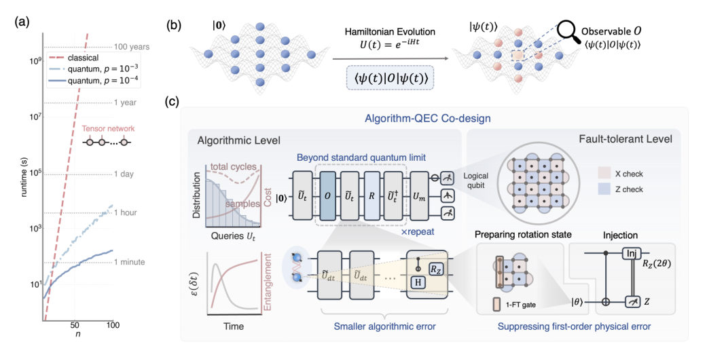
<figcaption class="paper-figure-caption"><b>Fig 1.</b> FIG. 1. Full-stack framework for fault-tolerant quantum dynamics simulation and runtime comparison to classical approaches. (a) Quantum-classical runtime crossover for 1D mixed-field Ising models. Runtimes are evaluated at physical error rates p = 10−3 and 10−4 (detailed in Fig. 3). (b) Quantum simulation task. The goal is to estimate the expectation value ⟨ψ(t)| O |ψ(t)⟩of a time-evolved state |ψ(t)⟩= U(t) |0⟩to a specified precision. (c) Schematic of the algorithm-QEC co- design framework. Left panel: Logical-level illustration of the quantum algorithm. Upper left: Observable estimation built upon the amplitude amplification circuit [56], surpassing the standard quantum limit for which...</figcaption>
</figure>
<figure class="paper-figure-card">
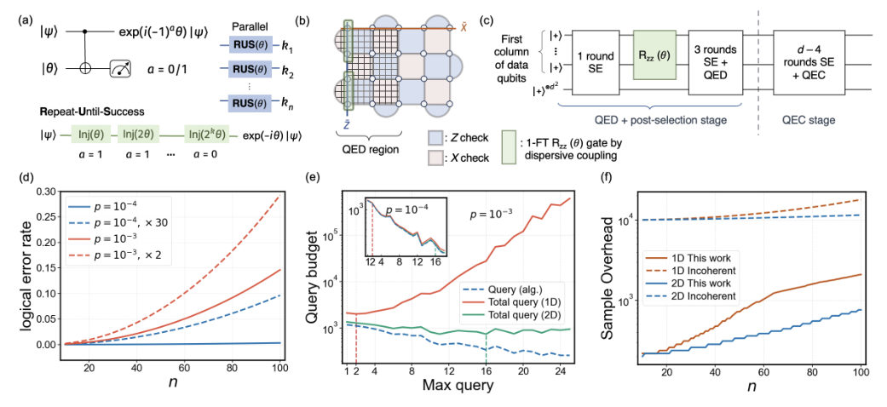
<figcaption class="paper-figure-caption"><b>Fig 2.</b> FIG. 2. Fault-tolerant logical rotation states preparation and optimisation of the query complexity and sampling overhead. (a) Protocol for implementing small-angle Z rotations in parallel on n qubits. Upper left: Basic state-injection gadget using the ancillary rotation state |θ⟩. Bottom: RUS procedure: if the measurement outcome indicates failure, a rotation state with doubled angle is injected and the protocol is repeated until success at round k +1. Upper right: Parallel execution of a single layer of rotation gates across n qubits. The expected number of RUS rounds required for all n qubits to complete their rotations scales as O(log n). (b) Preparation of |θ⟩L on a 4 × 5 rotated...</figcaption>
</figure>
<figure class="paper-figure-card">
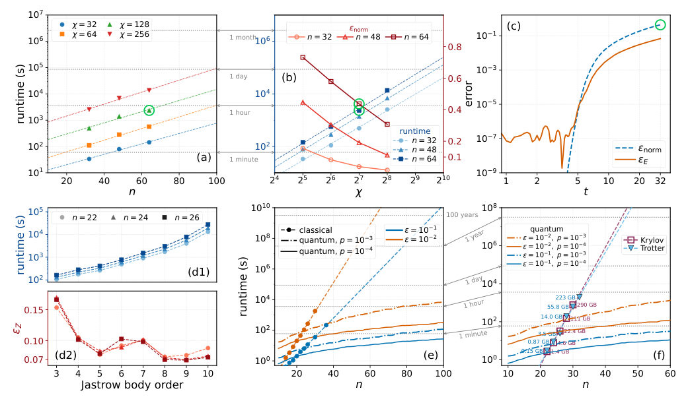
<figcaption class="paper-figure-caption"><b>Fig 3.</b> FIG. 3. Classical simulation cost and quantum-classical crossover for the 1D mixed-field Ising model. Top row: MPS benchmarks at fixed bond dimension (n = 32, 48, 64 and χ = 32, 64, 128, 256) evolved to t = n/2. (a) Runtime versus system size n at fixed χ. Dashed lines are exponential fits. (b) Runtime (left axis) and final norm-loss error εnorm (right axis) versus χ. Dashed lines are power-law fits. (c) Time evolution of εnorm and the energy-density error εE for n = 64 and χ = 128. Green open circles in (a)–(c) mark the same run (n=64, χ=128). This run illustrates that the truncation error grows rapidly during the time evolution at fixed χ, so bounding it requires χ to grow exponentially...</figcaption>
</figure>
<figure class="paper-figure-card">
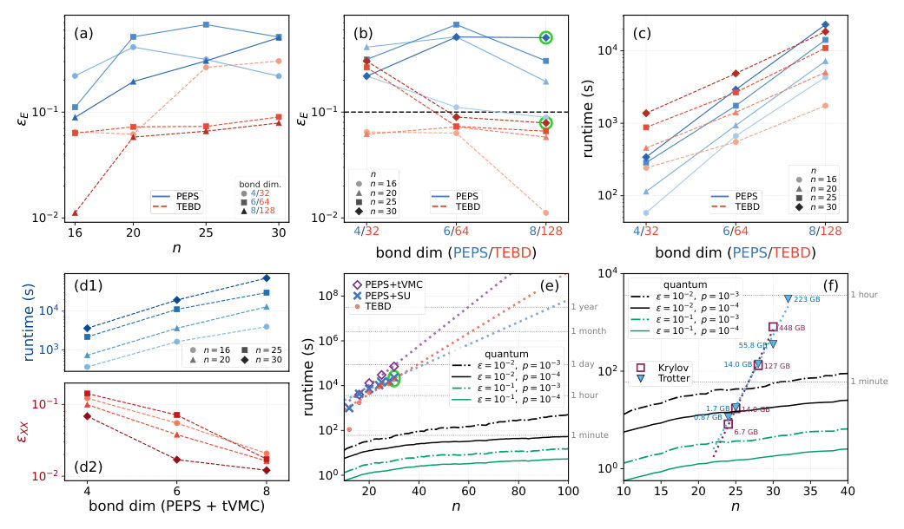
<figcaption class="paper-figure-caption"><b>Fig 4.</b> FIG. 4. Classical simulation error and quantum-classical crossover for the 2D mixed-field Ising model. The 2D system is evolved to t = √n (open Nx × Ny lattices with n = NxNy = 16, 20, 25, 30). (a, b) Final-time energy-density error εE for PEPS with simple-update truncation (blue solid lines with bond dimension χ = 4, 6, 8) and for TEBD on a 1D snake mapping (red dashed lines with χ = 32, 64, 128), shown versus system size n in (a) and versus bond dimension in (b). (c) Corresponding CPU wall times of the time evolution versus bond dimension. In (b, c) the paired x-ticks list the PEPS/TEBD bond dimensions. Green circles in (b) mark the n = 30 data at the largest bond dimension (PEPS χ = 8,...</figcaption>
</figure>
<figure class="paper-figure-card">
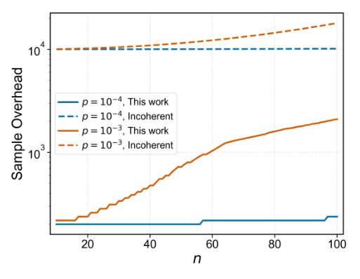
<figcaption class="paper-figure-caption"><b>Fig 5.</b> FIG. 5. Error mitigation sampling overhead for p = 10−3 and p = 10−4 in the 1D case.</figcaption>
</figure>
</div>

<p><strong>Summary.</strong> The paper develops a comprehensive, fault-tolerant framework to simulate complex quantum many-body dynamics, specifically using the mixed-field Ising model. By co-designing error correction with observable estimation, they establish concrete benchmarks showing that quantum computation can achieve an exponential speedup over classical tensor network methods for simulating non-equilibrium quantum systems.</p>
<p><strong>Why it may be interesting.</strong> This work directly addresses the 'quantum advantage' question by providing quantitative engineering targets and a scalable roadmap for fault-tolerant quantum simulation in condensed matter physics, which is highly relevant to AMO and open quantum systems research.</p>
<details>
<summary>Detailed structure</summary>
<p><strong>Main problem.</strong> The central challenge is establishing a concrete, quantifiable crossover point where fault-tolerant quantum computation surpasses the best available classical simulation algorithms for complex many-body dynamics.</p>
<p><strong>Main result.</strong> For realistic error rates ($p=10^{-3}$), the authors demonstrate that fault-tolerant quantum simulation of 1D systems requires significantly less time and fewer qubits than classical tensor network methods, projecting minutes or seconds for 2D models under better error control.</p>
<p><strong>Method.</strong> The work introduces a full-stack framework that co-designs observable estimation protocols with fault-tolerant Quantum Error Correction (QEC) techniques, specifically improving the implementation of non-Clifford rotations to suppress logical errors.</p>
<p><strong>Model / system.</strong> The study focuses on simulating quantum many-body dynamics using the mixed-field Ising model in both 1D and 2D lattices. The goal is estimating time-evolved expectation values $\langle\psi(t)| O | \psi(t)
angle$ under a Hamiltonian $H$.</p>
<p><strong>Key observables.</strong> Observable expectation value $\langle\psi(t)| O | \psi(t)
angle$, physical qubit count, required runtime (hours/minutes), and logical error accumulation.</p>
<p><strong>Important parameters / regimes.</strong> Physical error rates ($p=10^{-3}, p=10^{-4}$); system sizes (1D up to 100 sites, 2D lattices); target precision $\epsilon$.</p>
<p><strong>Assumptions / limitations.</strong> The analysis assumes the feasibility of implementing a hybrid fault-tolerant architecture combining Clifford+T synthesis with optimized rotation state injection.</p>
<p><strong>Figures summary.</strong> Figures illustrate the quantum-classical runtime crossover for 1D Ising models, schematic diagrams detailing the algorithm-QEC co-design, and error analyses comparing different simulation methods (e.g., PEPS vs. Trotter) on 2D lattices.</p>
<p><strong>Paper structure.</strong> The paper establishes the problem by defining the quantum dynamics task; it then details a novel fault-tolerant framework that integrates observable estimation with QEC protocols; finally, it benchmarks this approach against state-of-the-art classical methods (TN/VMC) to quantify the crossover point.</p>
</details>
<details>
<summary>Abstract</summary>
<p>While quantum computers promise to solve classically intractable problems, identifying the point at which fault-tolerant quantum computation outperforms the best classical algorithms for practical applications remains an outstanding challenge. Here we establish a concrete quantum-classical crossover for quantum many-body dynamics under realistic hardware conditions. We introduce a scalable fault-tolerant framework that combines coherent observable estimation with a space-time-efficient implementation of non-Clifford rotations, suppressing the residual logical errors that limit existing partially fault-tolerant approaches. A benchmark against state-of-the-art tensor-network and variational Monte Carlo algorithms reveals a concrete crossover for mixed-field Ising dynamics at modest system sizes. For a physical error rate of $p=10^{-3}$, fault-tolerant simulation requires approximately 2 hours and $3.7 \times 10^5$ physical qubits for a 100-site 1D system, whereas tensor network approaches would require about 100 years. For 2D models, where rapid entanglement growth limits the classical evolution time, we project quantum runtimes within minutes. A physical error rate of $p=10^{-4}$ leads to at least an order of magnitude reduction in qubit count ($3.1 \times 10^4$ physical qubits) and runtime (minutes for 1D and seconds for 2D). The reduction in quantum runtime arises from our improved rotation-state injection and co-design of quantum error correction and observable-estimation protocols, which jointly suppress logical-error accumulation and reduce sampling overhead. Our results establish a scalable route towards practical quantum advantage and identify quantitative engineering targets for future fault-tolerant architectures.</p>
</details>
<p><sub><a href="#top">↑ back to top</a></sub></p>

<p><a id="paper-2607.15947"></a></p>
<h3 id="beyond-the-positive-partial-transpose-squared-conjecture-the-qutrit-case"><a href="http://arxiv.org/abs/2607.15947v1">Beyond the Positive Partial Transpose Squared Conjecture: The Qutrit Case</a></h3>
<p><strong>Authors:</strong> Junhyeong An, Soojoon Lee<br>
<strong>Type:</strong> theory · <strong>Category:</strong> quantum information and computing · <strong>PDF:</strong> <a href="https://arxiv.org/pdf/2607.15947v1">https://arxiv.org/pdf/2607.15947v1</a><br>
<strong>Analysis basis:</strong> full PDF text, analyzed in chunks
<strong>Topic relevance:</strong> <code>entanglement &amp; information structure</code> <strong>3/5</strong> · <code>Keldysh / 2PI / non-Gaussian methods</code> <strong>1/5</strong> · <code>correlated / nonlocal dissipation</code> <strong>1/5</strong> · <code>methods for driven-dissipative</code> <strong>1/5</strong></p>
<div class="figure-strip-hint">↔ Scroll figures horizontally</div>
<div class="paper-figures-scroll">
<figure class="paper-figure-card">
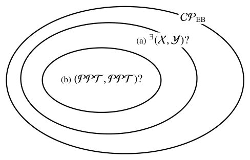
<figcaption class="paper-figure-caption"><b>Fig 1.</b> FIG. 1: Schematic illustration of the EB-composability problem. Let CPEB be the set of ordered pairs (Φ, Ψ) of CP maps such that Φ ◦Ψ is entanglement breaking. (a) An ordered pair of cones (X, Y) is EB- composable precisely when CPEB contains the Cartesian product of the two cones X×Y; in the figure, we identify the ordered pair (X, Y) with this product. (b) In particular, if, in every dimension, an EB- composable pair (X, Y) satisfies PPT ⊆X and PPT ⊆Y, then the PPT squared conjecture holds.</figcaption>
</figure>
<figure class="paper-figure-card">
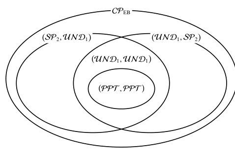
<figcaption class="paper-figure-caption"><b>Fig 2.</b> FIG. 2: Schematic illustration of our EB-composability results in the qutrit setting. For qutrit CP maps, PPT ⊆UND1 ⊆SP2 [22], and both UND1 × SP2 and SP2 × UND1 are contained in CPEB (see Theorem 4). Consequently, (UND1 × SP2) ∩(SP2 × UND1) = UND1 × UND1 ⊆CPEB (Corollary 7). Since UND1 contains non-PPT maps, PPT × PPT ⊊UND1 × UND1. Moreover, when either component is fixed to be SP2, the largest compatible cone for the other component is exactly UND1 (see Theorem 6).</figcaption>
</figure>
<figure class="paper-figure-card">
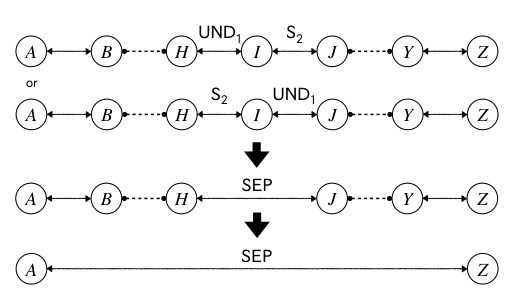
<figcaption class="paper-figure-caption"><b>Fig 3.</b> FIG. 3: Entanglement-swapping obstruction caused by a 1- undistillable link. When a two-qutrit link in UND1 is joined to a link in S2, in either order, every post-selected entanglement swapping outcome is separable. Consequently, the resulting state is separable, and subsequent entanglement swapping cannot generate end-to-end entanglement between A and Z.</figcaption>
</figure>
</div>

<p><strong>Summary.</strong> This paper extends the study of entanglement preservation beyond the standard PPT conjecture by analyzing map composition in the qutrit setting. It proves that combining 1-undistillable channels with low-Schmidt number channels results in entanglement breaking. This has direct implications for understanding limitations in quantum repeaters and entanglement swapping protocols.</p>
<p><strong>Why it may be interesting.</strong> This work provides rigorous mathematical tools for characterizing when quantum operations fail to preserve entanglement, which is crucial for designing robust quantum communication protocols.</p>
<details>
<summary>Detailed structure</summary>
<p><strong>Main problem.</strong> The paper investigates the EB-composability problem, which generalizes the PPT squared conjecture by analyzing whether the composition of two specific cones of quantum channels is always entanglement breaking.</p>
<p><strong>Main result.</strong> For qutrit systems, the composition of maps from the 1-undistillable cone ($   ext{UND}_1$) and the Schmidt number $\le 2$ cone ($ ext{SP}_2$) is proven to be entanglement breaking in both orders.</p>
<p><strong>Method.</strong> The authors utilize the Choi–Jamiołkowski correspondence to translate state properties (like separability) into map properties, proving composition theorems for defined cones of completely positive maps.</p>
<p><strong>Model / system.</strong> The analysis focuses on quantum channels acting on two-qutrit systems ($d=3$), specifically characterizing the behavior of $  ext{UND}_1$ and $   ext{SP}_2$ cones under map composition.</p>
<p><strong>Key observables.</strong> Entanglement breaking (EB) property of composed maps, separability ($\in 	ext{SEP}$), and the Schmidt number of Choi matrices.</p>
<p><strong>Important parameters / regimes.</strong> The dimension $d=3$ (qutrit case); the structure of the two cones $   ext{UND}_1$ and $   ext{SP}_2$.</p>
<p><strong>Assumptions / limitations.</strong> The results are proven specifically for the two-qutrit setting; map composition is compared against general selective measurements.</p>
<p><strong>Figures summary.</strong> Figures illustrate the schematic for EB-composability, showing $(	ext{PPT}, 	ext{PPT})$ as a special case, and confirm inclusions like $    ext{PPT} \subseteq  ext{UND}_1 \subseteq    ext{SP}_2$ in the qutrit setting.</p>
<p><strong>Paper structure.</strong> The paper progresses by defining the EB-composability problem, proving composition theorems for $(	ext{UND}_1, 	ext{SP}_2)$ (Theorem 4), establishing the maximality of $  ext{UND}_1$ (Theorem 6), and finally translating these map results to a state-level entanglement swapping condition (Corollary 10).</p>
</details>
<details>
<summary>Abstract</summary>
<p>Entanglement swapping is a fundamental operation in quantum repeaters for establishing entanglement between distant parties. The positive partial transpose (PPT) squared conjecture asks whether two PPT entangled links can generate terminal entanglement through entanglement swapping, or equivalently, whether the composition of two PPT maps is always entanglement breaking. Motivated by this conjecture, we investigate the map-composition problem beyond the PPT setting. For qutrit completely positive (CP) maps, we prove that the composition of any CP map whose Choi matrix is $1$-undistillable with any CP map whose Choi matrix has Schmidt number at most two is entanglement breaking in either order. Moreover, we show that the cone of $1$-undistillable CP maps is exactly the largest qutrit cone of CP maps whose composition with every CP map whose Choi matrix has Schmidt number at most two is entanglement breaking in both orders. Finally, although map composition captures only the standard maximally entangled outcome in entanglement swapping, we prove that any $1$-undistillable two-qutrit state and any state of Schmidt number at most two cannot generate terminal entanglement under an arbitrary selective measurement on the intermediate systems.</p>
</details>
<p><sub><a href="#top">↑ back to top</a></sub></p>

<p><a id="paper-2607.15668"></a></p>
<h3 id="spectral-attack-on-continuous-variable-quantum-key-distribution-systems"><a href="http://arxiv.org/abs/2607.15668v1">Spectral Attack on Continuous-Variable Quantum Key Distribution Systems</a></h3>
<p><strong>Authors:</strong> Chen Gong, Mingxuan Guo, Peng Huang, Tao Wang, Guihua Zeng<br>
<strong>Type:</strong> both · <strong>Category:</strong> quantum information and computing · <strong>PDF:</strong> <a href="https://arxiv.org/pdf/2607.15668v1">https://arxiv.org/pdf/2607.15668v1</a><br>
<strong>Analysis basis:</strong> full PDF text, analyzed in chunks
<strong>Topic relevance:</strong> <code>interference shaping light</code> <strong>3/5</strong> · <code>quantum optics experiment</code> <strong>3/5</strong></p>
<div class="figure-strip-hint">↔ Scroll figures horizontally</div>
<div class="paper-figures-scroll">
<figure class="paper-figure-card">
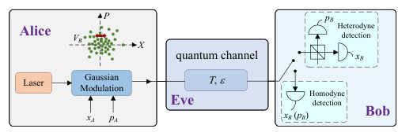
<figcaption class="paper-figure-caption"><b>Fig 1.</b> FIG. 1. Prepare-and-measure model of the GMCS-CVQKD protocol.</figcaption>
</figure>
<figure class="paper-figure-card">
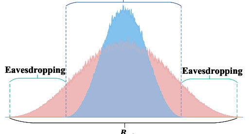
<figcaption class="paper-figure-caption"><b>Fig 2.</b> FIG. 2. Schematic illustration of eavesdropping on out-of- band frequency components under bandwidth mismatch con- ditions, where blue denotes the transmitter signal and pink denotes the receiver detection signal.</figcaption>
</figure>
<figure class="paper-figure-card">
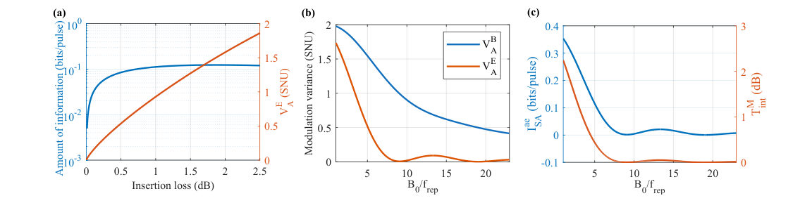
<figcaption class="paper-figure-caption"><b>Fig 3.</b> FIG. 3. Simulation results. (a) Required eavesdropped information and corresponding minimum required V E A for rendering the system insecure under different insertion losses, where V B A is 2 shot noise units (SNU); (b) The relationship of V B A and V E A with the normalized bandwidth B0/frep; (c) The relationship of Iae SA and the maximum allowable insertion loss T M int with the normalized bandwidth B0/frep. The detection efficiency is 0.48, the electrical noise is 0.5 SNU, the peak value of the transmitter-side signal spectrum is √</figcaption>
</figure>
<figure class="paper-figure-card">
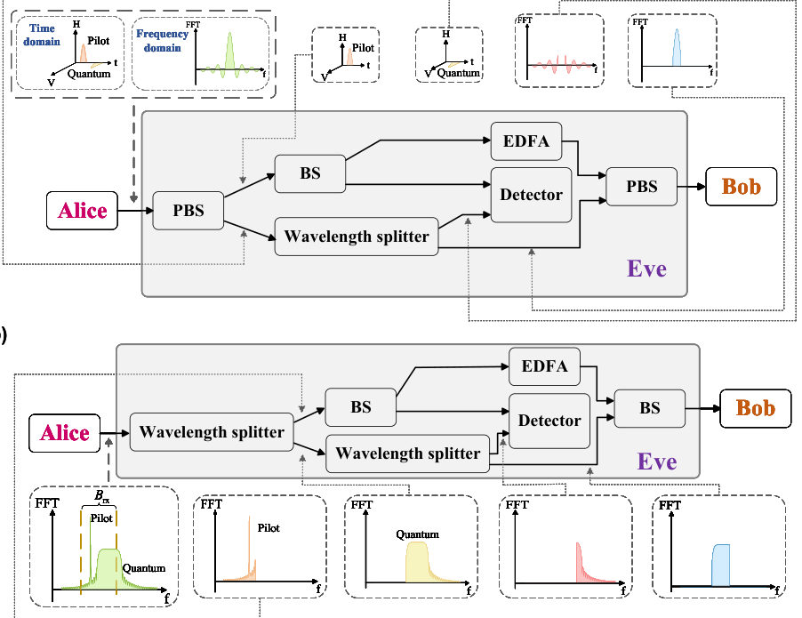
<figcaption class="paper-figure-caption"><b>Fig 4.</b> FIG. 4. Schematic diagram of the spectral attack based on bandwidth mismatch. (a) Attack scheme for a PDM-LLO-CVQKD system; (b) Attack scheme for a FDM-LLO-CVQKD system.</figcaption>
</figure>
<figure class="paper-figure-card">
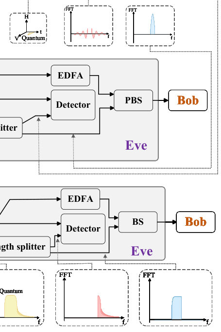
<figcaption class="paper-figure-caption"><b>Fig 5.</b> Fig. 4(b) illustrates the specific implementation of the attack scheme in the FDM-LLO-CVQKD system. To be- gin with, Eve separates the frequency-multiplexed light emitted by Alice using a first-stage wavelength splitter, directing the pilot signal and the quantum signal into different paths. Similar to the PDM scheme, the pi- lot branch is split by a BS, and one output is sent to an EDFA for amplification to improve the signal-to-noise ratio of the pilot utilized by the legitimate parties. The other output is sent to a detector to acquire phase ref- erence information. The quantum signal branch is fur- ther separated by a second-stage wavelength splitter into frequency components within and...</figcaption>
</figure>
</div>

<p><strong>Summary.</strong> This paper reveals that bandwidth mismatch in CVQKD systems creates a security loophole allowing an eavesdropper to extract key information from out-of-band spectral components. By developing a spectral attack model and verifying it with simulations, the authors demonstrate how this leakage necessitates revising security estimates, providing crucial guidelines for designing robust quantum communication hardware.</p>
<p><strong>Why it may be interesting.</strong> It provides a concrete, practical vulnerability assessment for quantum communication protocols, bridging the gap between idealized theoretical models and real-world hardware limitations like bandwidth mismatch.</p>
<details>
<summary>Detailed structure</summary>
<p><strong>Main problem.</strong> The paper addresses a practical security loophole in Continuous-Variable Quantum Key Distribution (CVQKD) caused by bandwidth mismatch between the transmitter and receiver.</p>
<p><strong>Main result.</strong> This loophole allows an eavesdropper to directly obtain raw key information from out-of-band frequency components, significantly lowering the achievable secret key rate compared to conventional estimates.</p>
<p><strong>Method.</strong> The authors propose a spectral attack scheme based on Fourier analysis of signal spectra and construct a proof-of-principle attack verified through numerical simulations and experimental considerations.</p>
<p><strong>Model / system.</strong> The study focuses on Gaussian-modulated coherent states (GMCS) CVQKD, specifically analyzing Local-Oscillator (LLO)-CVQKD systems operating under spectral spreading due to channel imperfections.</p>
<p><strong>Key observables.</strong> Leaked information ($\chi_{bE}$), secret key rate (estimated vs. modified), and the required signal-to-noise ratio for eavesdropping.</p>
<p><strong>Important parameters / regimes.</strong> Bandwidth mismatch, insertion loss from wavelength splitters, transmission distance (e.g., 25 km), and cutoff frequencies (e.g., 100 MHz to 150 MHz).</p>
<p><strong>Assumptions / limitations.</strong> The analysis relies on asymptotic limits and heterodyne-detection conditions for calculating leaked information; it also models spectral broadening via a spreading kernel $L(f)$.</p>
<p><strong>Figures summary.</strong> Figures compare Eve's obtained information against security thresholds at various distances/losses, and show the reduction in the secret key rate when accounting for out-of-band leakage.</p>
<p><strong>Paper structure.</strong> The paper first identifies the bandwidth mismatch loophole using spectral analysis, then develops the mathematical framework for the attack, presents simulations showing quantitative vulnerabilities across varying loss/bandwidths, and concludes by proposing defense strategies involving both system design (bandwidth) and key rate correction.</p>
</details>
<details>
<summary>Abstract</summary>
<p>Continuous-variable quantum key distribution (CVQKD) has attracted extensive attention due to its compatibility and low costs. However, bandwidth mismatch exists to varying degrees between the transmitter and receiver. This may prevent frequency components carrying modulation information from being fully perceived by the legitimate party. In this paper, we identify a practical security loophole caused by bandwidth mismatch and propose a corresponding spectral attack scheme. Different from previous approaches that exploit security loopholes to conceal the excess noise introduced by intercept-resend attacks, this scheme can directly obtain raw-key information without introducing additional disturbances. A proof-of-principle attack on a CVQKD system with filtering operation is constructed to verify the feasibility. Experimental results indicate that Eve can obtain enough information to render the system insecure if this practical security loophole is ignored. Based on the identified security loophole, corresponding defense strategies are proposed. This work helps bridge the gap between theoretical models and practical implementations, providing a reference for defense design in practical quantum communication systems.</p>
</details>
<p><sub><a href="#top">↑ back to top</a></sub></p>

<p><a id="paper-2607.15676"></a></p>
<h3 id="absence-of-spin-glass-order-on-migdal-kadanoff-hierarchical-lattices-near-three-dimensions"><a href="http://arxiv.org/abs/2607.15676v1">Absence of Spin-Glass Order on Migdal--Kadanoff Hierarchical Lattices near Three Dimensions</a></h3>
<p><strong>Authors:</strong> Manaka Okuyama, Masayuki Ohzeki<br>
<strong>Type:</strong> theory · <strong>Category:</strong> disordered systems and neural networks · <strong>PDF:</strong> <a href="https://arxiv.org/pdf/2607.15676v1">https://arxiv.org/pdf/2607.15676v1</a><br>
<strong>Analysis basis:</strong> full PDF text, analyzed in chunks
<strong>Topic relevance:</strong> <code>exotic spin models in light-matter</code> <strong>3/5</strong> · <code>Keldysh / 2PI / non-Gaussian methods</code> <strong>1/5</strong> · <code>analog quantum simulation</code> <strong>1/5</strong></p>
<div class="figure-strip-hint">↔ Scroll figures horizontally</div>
<div class="paper-figures-scroll">
<figure class="paper-figure-card">
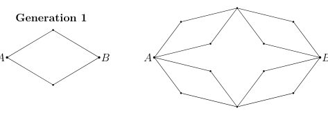
<figcaption class="paper-figure-caption"><b>Fig 1.</b> FIG. 1. First two generations of the MK hierarchical lattice for s = b = 2. Each bond is replaced by two parallel chains of two bonds.</figcaption>
</figure>
</div>

<p><strong>Summary.</strong> This paper rigorously proves that for Ising spin glasses on specific Migdal--Kadanoff hierarchical lattices, spin-glass order is absent by relating the problem to bond percolation. The authors establish a sufficient criterion using exact RG steps, providing strong theoretical evidence contrasting previous numerical estimates regarding critical dimensions.</p>
<p><strong>Why it may be interesting.</strong> While focused on classical statistical mechanics, the techniques involving renormalization group flow and critical phenomena are foundational tools used in analyzing quantum phase transitions and many-body systems in AMO physics.</p>
<details>
<summary>Detailed structure</summary>
<p><strong>Main problem.</strong> The research aims to rigorously determine the existence or absence of spin-glass order in Ising spin glass models on Migdal--Kadanoff (MK) hierarchical lattices, particularly near three dimensions.</p>
<p><strong>Main result.</strong> The authors provide a sufficient condition based on bond percolation that proves the absence of spin-glass order and stiffness for specific lattice constructions, even when their fractal dimension approaches three from below.</p>
<p><strong>Method.</strong> The methodology employs an exact Renormalization Group (RG) step combined with a connectivity argument derived from bond percolation theory to analyze the decay of correlations.</p>
<p><strong>Model / system.</strong> The system is the Ising spin glass model with symmetric binary couplings, studied on MK hierarchical lattices defined by scale factors and branching numbers. The Hamiltonian involves nearest-neighbor interactions across generations of the lattice structure.</p>
<p><strong>Key observables.</strong> Spin-glass correlation ($\langle \sigma_A \sigma_B 
angle^2$), stiffness parameter ($   heta$), and vacancy probability ($\Psi(q)$) relative to the percolation threshold.</p>
<p><strong>Important parameters / regimes.</strong> The branching number ($s$) must be even, and the lattice structure is characterized by its fractal dimension $d = 1 + \log s / \log b$.</p>
<p><strong>Assumptions / limitations.</strong> The derived criterion is only sufficient (not necessary) for proving the absence of order; the method relies on discrete couplings and specific RG steps.</p>
<p><strong>Figures summary.</strong> Figure 1 illustrates the first two generations of the MK hierarchical lattice structure used in the analysis, showing its recursive nature.</p>
<p><strong>Paper structure.</strong> The paper develops a rigorous criterion based on an exact single-step RG transformation that maps the spin glass problem onto bond percolation. The core proof involves comparing induced dilution probabilities against known percolation thresholds to establish the decay of order parameters across generations.</p>
</details>
<details>
<summary>Abstract</summary>
<p>We derive a rigorous sufficient condition for the absence of spin-glass order in the Ising spin glass with symmetric binary couplings on Migdal--Kadanoff (MK) hierarchical lattices with even branching number. The key observation is that a single exact renormalization-group step creates zero effective bonds with positive probability, thereby reducing the problem to bond percolation on the corresponding hierarchical lattice. When the induced dilution exceeds the percolation threshold, both spin-glass order and stiffness are absent at all temperatures, including zero temperature. As a consequence, our criterion gives a rigorous proof that the Ising spin glass on the square lattice does not exhibit a spin-glass phase within the MK approximation. More unexpectedly, by choosing sufficiently large scale factors and branching numbers, we construct MK hierarchical lattices whose fractal dimensions are arbitrarily close to three from below but still exhibit no spin-glass order. This sharply contrasts with numerical estimates obtained for MK hierarchical lattices with relatively small scale factors and branching numbers, which placed the lower critical dimension near \(2.52\).</p>
</details>
<p><sub><a href="#top">↑ back to top</a></sub></p>

<p><a id="paper-2607.16166"></a></p>
<h3 id="fast-logical-operations-in-quantum-ldpc-codes-using-simple-resource-states"><a href="http://arxiv.org/abs/2607.16166v1">Fast logical operations in quantum LDPC codes using simple resource states</a></h3>
<p><strong>Authors:</strong> Mark Webster, Nicolas Delfosse<br>
<strong>Type:</strong> theory · <strong>Category:</strong> quantum information and computing · <strong>PDF:</strong> <a href="https://arxiv.org/pdf/2607.16166v1">https://arxiv.org/pdf/2607.16166v1</a><br>
<strong>Analysis basis:</strong> full PDF text, analyzed in chunks
<strong>Topic relevance:</strong> <code>quantum measurements</code> <strong>3/5</strong> · <code>QC/QI experiment</code> <strong>1/5</strong> · <code>measurement-induced transitions</code> <strong>1/5</strong></p>
<div class="figure-strip-hint">↔ Scroll figures horizontally</div>
<div class="paper-figures-scroll">
<figure class="paper-figure-card">
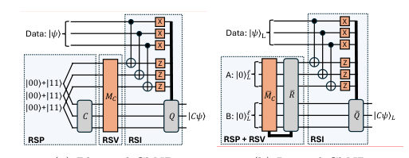
<figcaption class="paper-figure-caption"><b>Fig 1.</b> FIG. 1: Physical and Logical CliNR Circuits: in physical CliNR, resource state preparation (RSP) and verification (RSV) are separate steps followed by injection (RSI). In logical CliNR, RSP and RSV are merged and implemented at the logical level and RSI is implemented at the physical level.</figcaption>
</figure>
<figure class="paper-figure-card">
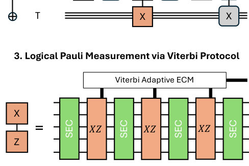
<figcaption class="paper-figure-caption"><b>Fig 2.</b> FIG. 2: Viterbi Gate-Based Protocol for implementing Clifford operations. We illustrate the protocol using a circuit composed of CNOT and CZ gates. Each logical CNOT between control qubit C and target qubit T is implemented using a logical auxiliary qubit A and three Pauli measurements. Each Pauli measurement employs the Viterbi measurement protocol which requires on average 5.06 cat-based measurements for our default error rate parameters.</figcaption>
</figure>
<figure class="paper-figure-card">
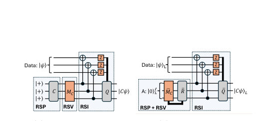
<figcaption class="paper-figure-caption"><b>Fig 3.</b> FIG. 3: Physical and Logical CZNR Circuits: see main text for an explanation of the notation used here.</figcaption>
</figure>
<figure class="paper-figure-card">
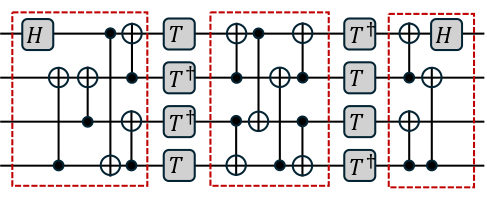
<figcaption class="paper-figure-caption"><b>Fig 4.</b> FIG. 4: Toffoli Circuit Used for Simulation of Logical CliNR Protocol</figcaption>
</figure>
</div>

<p><strong>Summary.</strong> This paper introduces a novel, resource-efficient method for performing joint logical measurements in quantum LDPC codes by utilizing only cat states. By introducing a scheduler code, the authors significantly accelerate the process of implementing complex gates like Clifford and Toffoli circuits compared to previous state-of-the-art methods. This work is crucial for advancing the feasibility and speed of fault-tolerant quantum computation.</p>
<p><strong>Why it may be interesting.</strong> While focused on abstract quantum coding theory, the underlying concepts of resource state management and efficient measurement scheduling are highly relevant to designing practical fault-tolerant quantum computation architectures using physical platforms like trapped ions or superconducting qubits.</p>
<details>
<summary>Detailed structure</summary>
<p><strong>Main problem.</strong> The primary goal is to develop significantly faster protocols for performing joint logical measurements of multiple commuting Pauli operators within quantum LDPC codes.</p>
<p><strong>Main result.</strong> The proposed cat-state measurement approach achieves up to a $74	imes$ speed-up over Viterbi measurements for random Clifford circuits, and shows substantial gains for Toffoli gates as well.</p>
<p><strong>Method.</strong> The authors propose using a scheduler code to manage the joint measurement sequence of $\ell$ commuting operators, relying solely on cat states rather than complex resource states used in prior work.</p>
<p><strong>Model / system.</strong> The study focuses on quantum LDPC codes, specifically mentioning implementations suitable for platforms like trapped ions or neutral atoms (the 'walking cat architecture'). The operations involve implementing logical Clifford and Toffoli gates via the CliNR partial error correction scheme.</p>
<p><strong>Key observables.</strong> Speed-up factor compared to Viterbi measurements; Logical Measurement Counts ($    ext{LM}$) and Cat-based Measurement Counts ($  ext{CM}$); Logical Error Rate ($\epsilon$).</p>
<p><strong>Important parameters / regimes.</strong> $\ell$ (number of commuting operators), code sizes (Q70, Q102), target error rates ($10^{-10}$).</p>
<p><strong>Assumptions / limitations.</strong> The approach assumes that fault-tolerance is not required to achieve the target logical error rate for a specific algorithm, and it utilizes specialized scheduler codes.</p>
<p><strong>Figures summary.</strong> Table IV compares Logical Measurements (LM) and Cat-based Measurements (CM) across Viterbi gate-based, Viterbi CliNR, and MEDM CliNR protocols for Toffoli circuits and random Cliffords.</p>
<p><strong>Paper structure.</strong> The paper introduces the problem of fast logical operations in LDPC codes. It details the proposed cat-state measurement protocol using a scheduler code (MEDM/MECM). The core argument involves comparing this new method against established Viterbi protocols for implementing logical Clifford gates via CliNR, culminating in quantitative speed-up results.</p>
</details>
<details>
<summary>Abstract</summary>
<p>Quantum LPDC codes provide a substantial reduction in qubit overhead required for fault-tolerant quantum computation compared to surface code, thanks to their high encoding rate. However, operating simultaneously on multiple logical qubits encoded in the same block is more challenging and may slow down logical operations. Prior work addresses this problem by designing complex resource states to perform logical measurements in LDPC codes. Here, we propose an approach that only consumes cat states. Whereas previous work on cat-based measurements focuses on a single logical measurement, we design a protocol for the joint measurement of $\ell$ commuting logical operators. The key ingredient is the design of a scheduler code determining the measurement sequence and allowing for the decoding of all logical measurement outcomes. Numerical simulations with the LDPC codes Q70 and Q102 of the walking cat architecture show a speed-up of nearly $3\times$ over Viterbi measurements for the measurement of $\ell=20$ commuting logical operators. Combining our fast logical measurements with a new variant of the CliNR partial error correction scheme, we achieve a speed up of up to up to $74\times$ for random Clifford circuits. Our approach also applies to non-Clifford gates, producing a speed up of up to $5\times$ for Toffoli gates.</p>
</details>
<p><sub><a href="#top">↑ back to top</a></sub></p>

<p><a id="paper-2607.16029"></a></p>
<h3 id="quantum-mechanics-on-lie-groups-ii-path-integrals"><a href="http://arxiv.org/abs/2607.16029v1">Quantum Mechanics on Lie Groups: II. Path Integrals</a></h3>
<p><strong>Authors:</strong> Mathieu Beauvillain, Blagoje Oblak, Marios Petropoulos<br>
<strong>Type:</strong> theory · <strong>Category:</strong> other · <strong>PDF:</strong> <a href="https://arxiv.org/pdf/2607.16029v1">https://arxiv.org/pdf/2607.16029v1</a><br>
<strong>Analysis basis:</strong> full PDF text, analyzed in chunks
<strong>Topic relevance:</strong> <code>Keldysh / 2PI / non-Gaussian methods</code> <strong>3/5</strong> · <code>methods for driven-dissipative</code> <strong>1/5</strong></p>
<div class="figure-strip-hint">↔ Scroll figures horizontally</div>
<div class="paper-figures-scroll">
<figure class="paper-figure-card">
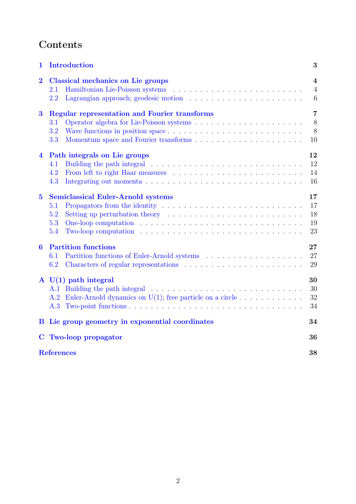
<figcaption class="paper-figure-caption"><b>Fig 1.</b> Low-resolution page preview, page 2</figcaption>
</figure>
<figure class="paper-figure-card">
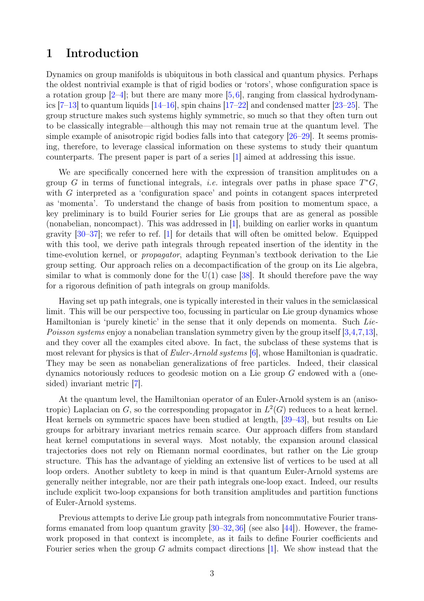
<figcaption class="paper-figure-caption"><b>Fig 2.</b> Low-resolution page preview, page 3</figcaption>
</figure>
<figure class="paper-figure-card">
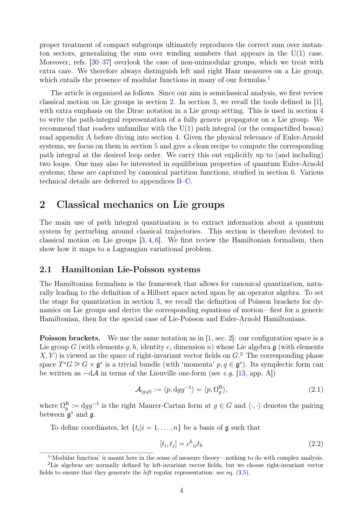
<figcaption class="paper-figure-caption"><b>Fig 3.</b> Low-resolution page preview, page 4</figcaption>
</figure>
<figure class="paper-figure-card">
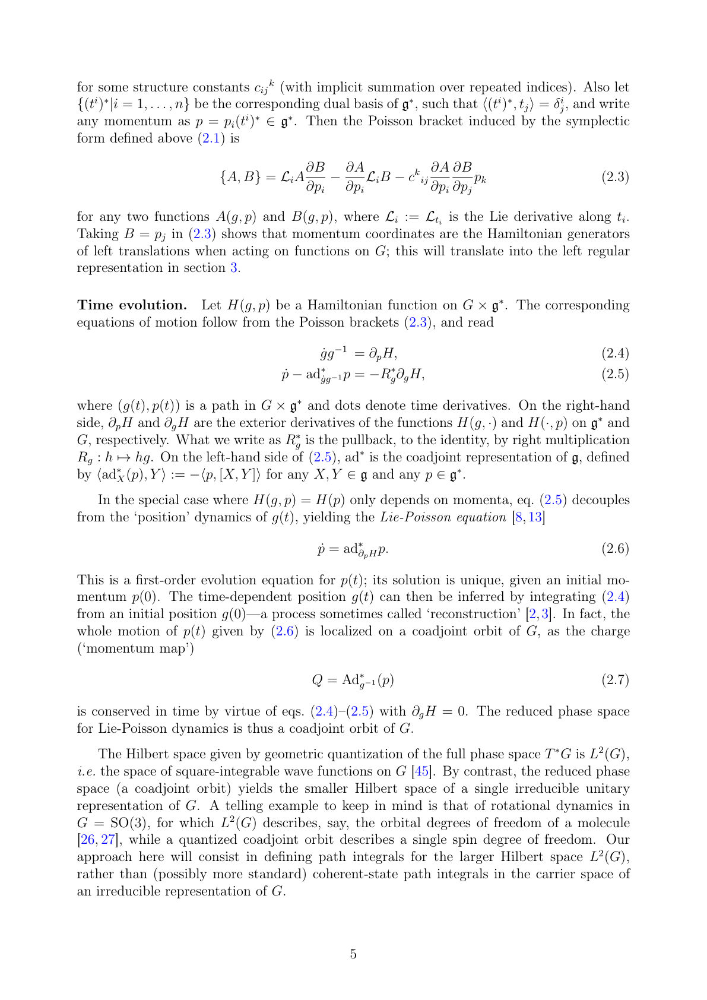
<figcaption class="paper-figure-caption"><b>Fig 4.</b> Low-resolution page preview, page 5</figcaption>
</figure>
<figure class="paper-figure-card">
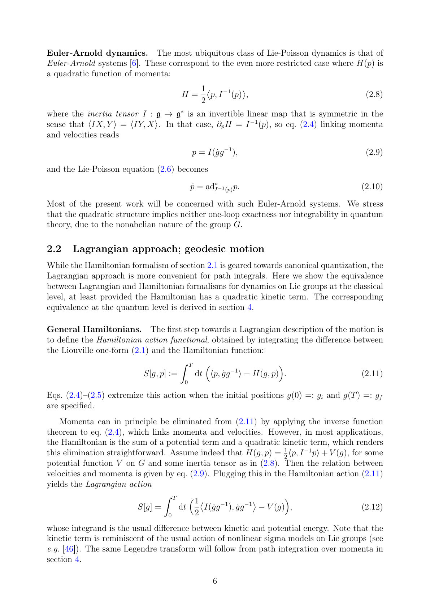
<figcaption class="paper-figure-caption"><b>Fig 5.</b> Low-resolution page preview, page 6</figcaption>
</figure>
</div>

<p><strong>Summary.</strong> This paper develops the path integral formalism for quantum mechanics on an arbitrary Lie group G, extending previous work by rigorously handling compact directions via winding number sums. It applies this framework to compute semiclassical approximations up to two-loop order for systems like the Euler-Arnold model. This advances the theoretical understanding of quantum dynamics in highly symmetric, non-Euclidean settings.</p>
<p><strong>Why it may be interesting.</strong> While highly abstract, the techniques developed for quantizing constrained or geometrically structured systems (like those on Lie groups) are foundational to understanding quantum field theories in curved backgrounds or effective descriptions of many-body dynamics where symmetries play a crucial role.</p>
<details>
<summary>Detailed structure</summary>
<p><strong>Main problem.</strong> The study focuses on developing a rigorous path integral formulation for quantum dynamics occurring on a general Lie group G.</p>
<p><strong>Main result.</strong> The authors provide explicit, two-loop order semiclassical approximations for propagators and partition functions associated with Euler-Arnold systems on the group manifold.</p>
<p><strong>Method.</strong> The methodology involves adapting Feynman's path integral approach to the non-commutative setting of a Lie group, utilizing techniques like summing over winding numbers in maximal tori and performing systematic loop expansions.</p>
<p><strong>Model / system.</strong> The system is quantum mechanics defined on a Lie Group G. The primary physical model analyzed is the Euler-Arnold system, whose dynamics are governed by Hamiltonians derived from quadratic kinetic terms on the group manifold.</p>
<p><strong>Key observables.</strong> Propagators, partition functions, and semiclassical approximations of transition amplitudes for Euler-Arnold systems.</p>
<p><strong>Important parameters / regimes.</strong> The order of approximation (up to two-loop), the structure constants of the Lie algebra, and the geometry of the maximal tori within G.</p>
<p><strong>Assumptions / limitations.</strong> The analysis assumes a quadratic kinetic term for simplification in deriving the Lagrangian action, and it addresses complexities arising from compact directions and non-unimodular groups.</p>
<p><strong>Figures summary.</strong> Not specified (Notes refer to mathematical equations and expansions rather than figure content).</p>
<p><strong>Paper structure.</strong> The paper builds upon previous work by first establishing the path integral framework on L^2(G), then deriving the classical dynamics via Hamiltonian/Lagrangian formalisms for Euler-Arnold systems, and finally executing complex two-loop perturbative calculations.</p>
</details>
<details>
<summary>Abstract</summary>
<p>We continue our study of quantum dynamics on a Lie group $G$, initiated in arXiv:2512.19840, by building the path integral that governs transition amplitudes in the Hilbert space $L^2(G)$. This relies on the proper handling of both a noncommutative momentum space and the presence of compact directions in $G$. We show that compactness can be handled through a sum over winding numbers in maximal tori of $G$, generalizing the similar sum commonly encountered for path integrals on a circle. As applications, we compute semiclassical approximations of propagators and partition functions of Euler-Arnold systems, up to (and including) two-loop order.</p>
</details>
<p><sub><a href="#top">↑ back to top</a></sub></p>

<p><a id="paper-2607.16110"></a></p>
<h3 id="combinatorial-aspects-of-holographic-quantum-secret-sharing"><a href="http://arxiv.org/abs/2607.16110v1">Combinatorial aspects of holographic quantum secret sharing</a></h3>
<p><strong>Authors:</strong> Ning Bao, Keiichiro Furuya, Jacob March<br>
<strong>Type:</strong> theory · <strong>Category:</strong> quantum information and computing · <strong>PDF:</strong> <a href="https://arxiv.org/pdf/2607.16110v1">https://arxiv.org/pdf/2607.16110v1</a><br>
<strong>Analysis basis:</strong> full PDF text, analyzed in chunks
<strong>Topic relevance:</strong> <code>entanglement &amp; information structure</code> <strong>3/5</strong></p>
<div class="figure-strip-hint">↔ Scroll figures horizontally</div>
<div class="paper-figures-scroll">
<figure class="paper-figure-card">
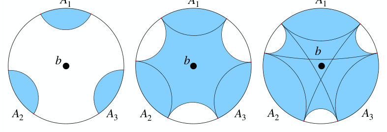
<figcaption class="paper-figure-caption"><b>Fig 1.</b> Figure 1: Three distinct holographic phases for n = 3 boundary subregions. The RT surfaces of the element in P[n] = {A1, A2, A3, A1A2, A1A3, A2A3, A1A2A3} are drawn with a black line. The entanglement wedge of A1A2A3 is highlighted blue. The black dot represents a spatial point in the bulk subregion b: (a) Disconnected phase, (b) Only the tripartite entanglement wedge, EW(A1A2A3), is connected, (c) The entanglement wedges of all combinations of boundary subre- gions are connected.</figcaption>
</figure>
<figure class="paper-figure-card">
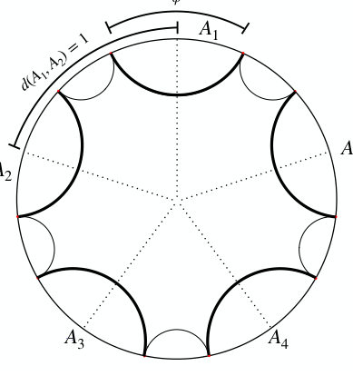
<figcaption class="paper-figure-caption"><b>Fig 2.</b> Figure 2: The symmetric setup for n = 5 on a constant time slice of AdS3. The entanglement wedges of A1, A2, A3, A4, A5, and A1A2A3A4A5 are drawn. The angular interval of each boundary subregion is ϕ. The directed distance between A1 and A2 is d(A1, A2) = 1.</figcaption>
</figure>
<figure class="paper-figure-card">
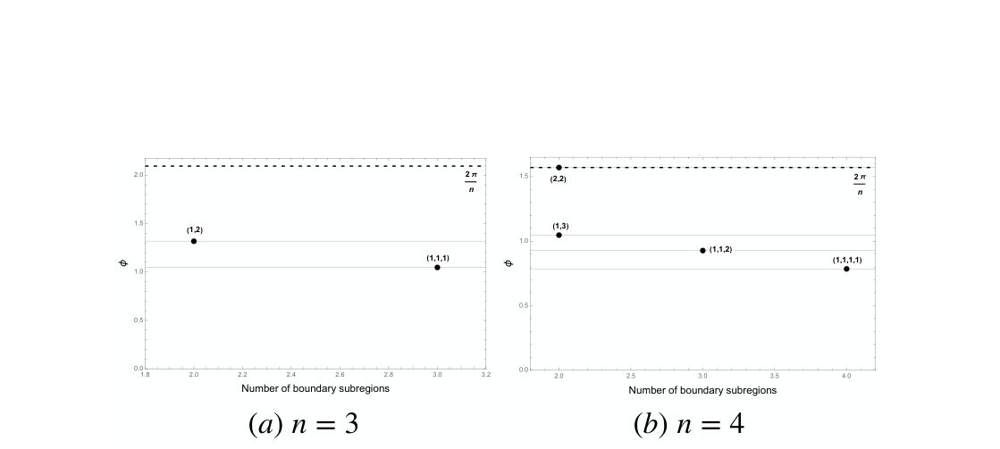
<figcaption class="paper-figure-caption"><b>Fig 3.</b> Figure 3: The plots of phase transition points for n = 3, 4. The horizontal axis m is the number of boundary subregions for m-partite entanglement wedges. The vertical axis is the angular interval 0 ≤ϕ ≤2π/n. We put the black dotted line when ϕ = 2π/n. The gray lines represent the value of transition points ϕt. For n = 3, we have ϕ0 = 1.05 ∼π/3 and ϕ1 = 1.32 radians. For n = 4, we have ϕ0 = 0.785, ϕ1 = 0.927, ϕ2 = 1.05 ∼π/3 and ϕ3 = 1.57 ∼2π/4 radians. The lowest gray horizontal line corresponds to the transition point ϕt=0 from the fully disconnected phase to the first connected phase. The labels (xi1, · · · , xi3) for ip ∈{1, 2, 3} and (xi1, · · · , xi4) for ip ∈{1, 2, 3, 4} are the sets...</figcaption>
</figure>
<figure class="paper-figure-card">
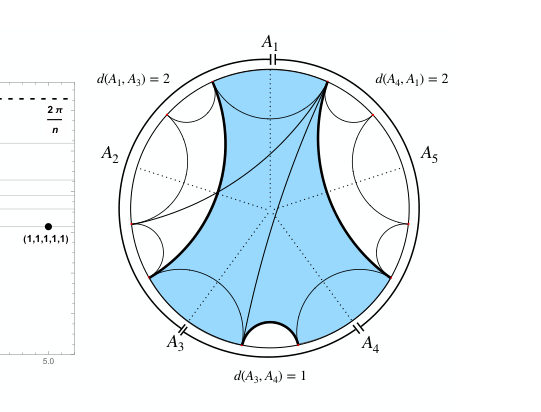
<figcaption class="paper-figure-caption"><b>Fig 4.</b> Figure 4: (a) The plot for the transition points for n = 5. We have five transition points, ϕ0 = 0.628 ∼π/5, ϕ1 = 0.715, ϕ2 = 0.781, ϕ3 = 0.857, ϕ4 = 1.04 radians. (b) The configuration of entanglement wedges of A1, A2, A3, A4, A5, A1A2, A1A2A3, A1A2A3A4, A1A2A3A4A5, and A1A3A4 when ϕ ≥ϕt=4 on a constant time slice of AdS3. The entanglement wedge of A1A3A4 is highlighted blue.</figcaption>
</figure>
<figure class="paper-figure-card">
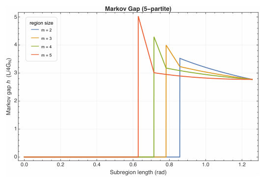
<figcaption class="paper-figure-caption"><b>Fig 5.</b> Figure 5: The Markov gaps of adjacent unions of m = 2, · · · , 5 boundary subregions in the symmetric n = 5 setup, as functions of the angular interval ϕ. The transition points coincide with the transition points in figure 4-(a).</figcaption>
</figure>
</div>

<p><strong>Summary.</strong> This paper develops and analyzes Combinatorial Holographic Quantum Secret Sharing (CHQSS) within the AdS3/CFT2 correspondence. It introduces key metrics—distance, reconstruction threshold, and secret threshold—to quantify the scheme's robustness against boundary erasures. The research demonstrates how these quantum information properties are dictated by the underlying holographic geometry and its phase transitions.</p>
<p><strong>Why it may be interesting.</strong> This work connects advanced concepts from quantum information theory (secret sharing) directly to gravitational physics via holography, providing a concrete framework for understanding how geometric properties encode quantum security features.</p>
<details>
<summary>Detailed structure</summary>
<p><strong>Main problem.</strong> The paper characterizes combinatorial holographic quantum secret sharing (CHQSS) for a bulk subregion in AdS3/CFT2 to understand how logical information is encoded on the boundary while remaining protected from erasures of boundary parts.</p>
<p><strong>Main result.</strong> They derive relations between the distance, reconstruction threshold, and secret threshold characterizing CHQSS schemes, constructing families including perfect threshold and non-threshold types.</p>
<p><strong>Method.</strong> The analysis involves defining combinatorial parameters ($d_b, r_b, s_b$) based on holographic entanglement structures (entanglement wedges) in AdS3/CFT2.</p>
<p><strong>Model / system.</strong> The model is a holographic setup involving $n$ boundary subregions $\{A_1, \dots, A_n\}$ on the boundary of AdS3. The geometry is analyzed using an RT-region graph structure to study entanglement wedges.</p>
<p><strong>Key observables.</strong> Distance ($d_b$), reconstruction threshold ($r_b$), and secret threshold ($s_b$) are key observables used to quantify the security and encoding quality of the scheme.</p>
<p><strong>Important parameters / regimes.</strong> The number of boundary subregions ($n$), the holographic phase, and the specific choice of bulk subregion determine the values of the thresholds and distance.</p>
<p><strong>Assumptions / limitations.</strong> The analysis relies on coarse-graining the holographic geometry using an RT-region graph and assumes that access structures satisfy monotonicity and no-cloning theorems derived from entanglement wedge nesting.</p>
<p><strong>Figures summary.</strong> Figures illustrate three distinct holographic phases for $n=3$ boundary subregions, showing reconstructability dependence on phase. Other figures plot parameter values ($d_b, r_b, s_b$) versus distance along a path in the symmetric $n=5$ setup.</p>
<p><strong>Paper structure.</strong> The paper introduces CHQSS, defines characterizing parameters ($d_b, r_b, s_b$), analyzes holographic phase transitions of entanglement wedges, derives relations between these parameters, and finally constructs specific families of CHQSS schemes in the symmetric setting.</p>
</details>
<details>
<summary>Abstract</summary>
<p>We introduce combinatorial holographic quantum secret sharing (CHQSS) for a bulk subregion in AdS$_3$/CFT$_2$ to study how logical information of the bulk subregion is encoded in the boundary and protected from erasures of boundary subregions. We introduce a distance, a reconstruction threshold, and a secret threshold to characterize CHQSS schemes. We present the phase transitions of multipartite entanglement wedges in a symmetric setup and observe multiple distinct phase transition points. The distance and thresholds depend on the holographic phase and the choice of bulk subregion. We derive the maximum distance. Moreover, we derive the relations between the distance and the thresholds. We construct a family of CHQSS schemes in the symmetric setting that includes perfect threshold CHQSS and perfect non-threshold CHQSS.</p>
</details>
<p><sub><a href="#top">↑ back to top</a></sub></p>

<p><a id="paper-2607.15786"></a></p>
<h3 id="fermion-parity-of-an-andreev-molecule-probed-by-nonlocal-josephson-effect"><a href="http://arxiv.org/abs/2607.15786v1">Fermion parity of an Andreev molecule probed by nonlocal Josephson effect</a></h3>
<p><strong>Authors:</strong> S. Annabi, H. Riechert, K. Watanabe, T. Taniguchi, J. Griesmar, E. Arrighi, L. Bretheau, J. -D. Pillet<br>
<strong>Type:</strong> both · <strong>Category:</strong> other · <strong>PDF:</strong> <a href="https://arxiv.org/pdf/2607.15786v1">https://arxiv.org/pdf/2607.15786v1</a><br>
<strong>Analysis basis:</strong> full PDF text, analyzed in chunks
<strong>Topic relevance:</strong> <code>analog quantum simulation</code> <strong>2/5</strong> · <code>correlated / nonlocal dissipation</code> <strong>2/5</strong> · <code>driven-dissipative phase transition</code> <strong>2/5</strong> · <code>quantum measurements</code> <strong>2/5</strong> · <code>Kondo &amp; dissipative impurity</code> <strong>1/5</strong> · <code>QC/QI experiment</code> <strong>1/5</strong> · <code>measurement-induced transitions</code> <strong>1/5</strong> · <code>methods for driven-dissipative</code> <strong>1/5</strong> · <code>non-equilibrium dynamics</code> <strong>1/5</strong></p>
<div class="figure-strip-hint">↔ Scroll figures horizontally</div>
<div class="paper-figures-scroll">
<figure class="paper-figure-card">
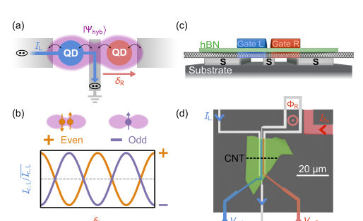
<figcaption class="paper-figure-caption"><b>Fig 1.</b> Figure 1. Fermion parity detection in a carbon nan- otube Andreev molecule. (a) Schematic of an Andreev molecule formed by two quantum-dot Josephson junctions (blue and red) coupled through a common superconduct- ing electrode (grey). The hybridized molecular state |Ψhyb⟩ (purple) extends across both junctions and mediates a non- local Josephson effect (NLJE), whereby the supercurrent IL through the left junction depends on the superconducting phase difference δR across the right junction. (b) Schematic of parity detection through the NLJE, which manifests as the critical current Ic,L of the left junction exhibiting a pe- riodic dependence on δR. Different parity configurations of the...</figcaption>
</figure>
<figure class="paper-figure-card">
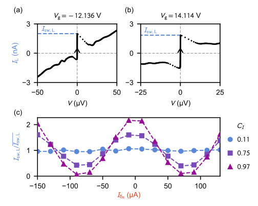
<figcaption class="paper-figure-caption"><b>Fig 2.</b> Figure 2. Nonlocal Josephson effect. (a)-(b) Current- voltage characteristics IL(V ) measured at different back-gate voltages Vg. The current is swept from negative to positive values, and the switching current Isw,L is defined as the maxi- mum current sustained by the supercurrent branch. (c) Isw,L as a function of the flux current IδR controlling the phase difference δR across the right junction, shown at three differ- ent Vg values (14.395 V, 13.938 V and 14.281 V for respectively circle, square and triangle markers). The periodic modula- tion demonstrates a pronounced nonlocal Josephson response that is quantified with a modulation contrasts CI extracted for each curve.</figcaption>
</figure>
<figure class="paper-figure-card">
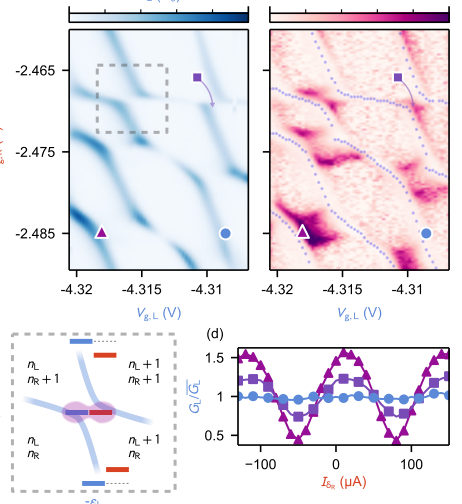
<figcaption class="paper-figure-caption"><b>Fig 3.</b> Figure 3. Hybridization of Andreev molecular states. (a) Zero-bias conductance GL of the left junction in device T averaged over the flux current IδR as a function of the local gate voltages Vg,L/R. Resonance lines correspond to the align- ment of discrete quantum-dot levels with the chemical po- tential of the superconducting electrodes, providing access to the electronic spectrum of the double quantum dot. Conduc- tance is expressed in units of f G0 = 10−2e2/h. (b) Schematic of the region highlighted by the dashed square in (a), where the energy levels ϵL and ϵR are tuned into resonance. At the avoided crossing, the two levels hybridize into bonding and antibonding Andreev molecular...</figcaption>
</figure>
<figure class="paper-figure-card">
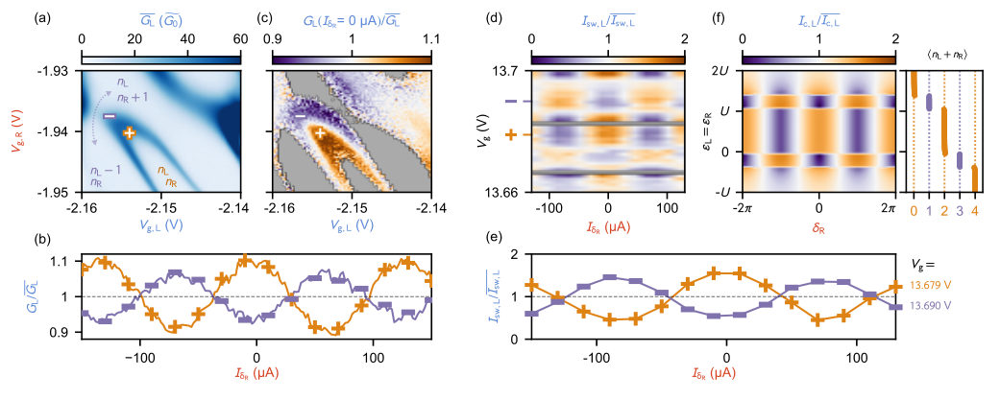
<figcaption class="paper-figure-caption"><b>Fig 4.</b> Figure 4. Probing the global fermion parity through the nonlocal Josephson effect. (a) Zero-bias conductance GL of device T averaged over IδR, as a function of the local gate voltages Vg,L/R. The highlighted region exhibits superconducting avoided crossings connecting charge states differing by two electrons, specified by (nL, nR). (b) Flux-dependent nonlocal response measured at two operating points of opposite parity (indicated by +/−in (a) and (c)). (c) Zero-bias conductance GL, normalized by its average value GL and measured at fixed flux current IδR = 0 µA, in the same gate-voltage region as in (a). Abrupt changes in the phase of the nonlocal response, for example from operating points...</figcaption>
</figure>
</div>

<p><strong>Summary.</strong> The research demonstrates that the global fermion parity of an Andreev molecule can be measured locally by observing the nonlocal Josephson effect. By coupling two quantum dots via superconducting junctions, researchers found that changes in the molecular ground-state parity cause a distinct $\pi$-phase shift in the supercurrent response. This establishes the NLJE as a powerful tool for probing fundamental quantum numbers in hybrid superconducting circuits.</p>
<p><strong>Why it may be interesting.</strong> This work provides a concrete experimental realization of measuring a fundamental quantum number (fermion parity) in superconducting circuits by exploiting non-local transport phenomena, which is highly relevant for understanding topological superconductivity and charge quantization in mesoscopic devices.</p>
<details>
<summary>Detailed structure</summary>
<p><strong>Main problem.</strong> The primary goal is to detect the global fermion parity of a delocalized superconducting state using only local measurements.</p>
<p><strong>Main result.</strong> The nonlocal Josephson effect (NLJE) was shown to manifest characteristic $\pi$-phase shifts in its response, providing an experimentally accessible signature for changes in the system's global fermion parity.</p>
<p><strong>Method.</strong> The study combines experimental measurement of the nonlocal supercurrent modulation with theoretical modeling based on a minimal Andreev-molecule Hamiltonian.</p>
<p><strong>Model / system.</strong> The physical platform is an Andreev molecule realized using two coupled quantum-dot Josephson junctions within a carbon nanotube. The model treats superconducting correlations and interdot hybridization effects.</p>
<p><strong>Key observables.</strong> Nonlocal Josephson response (periodic modulation of critical current $I_{c,L}$ vs. flux bias $\delta R$), and the signature diagnostic is the abrupt $\pi$-phase shift in this nonlocal signal.</p>
<p><strong>Important parameters / regimes.</strong> The system operates at very low temperatures (10 mK) and depends critically on controlling gate voltages to tune between different charge/parity regimes.</p>
<p><strong>Assumptions / limitations.</strong> The authors assume that the observed nonlocal transport signatures are directly traceable to the delocalization of Andreev molecular states, which is confirmed by comparing results across different control schemes (Device B vs. Device T).</p>
<p><strong>Figures summary.</strong> Figures illustrate schematics of the device and the parity detection mechanism; key figures show $I_{sw,L}$ modulation as a function of flux bias ($\delta R$) demonstrating NLJE, conductance maps revealing avoided crossings, and theoretical calculations mapping out superconducting parity islands.</p>
<p><strong>Paper structure.</strong> The paper progresses by first establishing the physical system (Andreev molecule in CNT), then demonstrating the nonlocal Josephson effect via measurements, linking this effect to wavefunction delocalization, and finally using theory/further experiments to confirm that the phase shift directly maps onto global fermion parity changes.</p>
</details>
<details>
<summary>Abstract</summary>
<p>Fermion parity is a fundamental property of superconducting many-body states. Here, we show that the global fermion parity of a delocalized superconducting state can be detected locally by exploiting the nonlocal Josephson effect. Using a carbon nanotube-based Andreev molecule formed by two coupled quantum-dot Josephson junctions, we observe a pronounced nonlocal Josephson response and demonstrate the formation of delocalized Andreev molecular states extending across both junctions. We further show that changes in the molecular ground-state parity manifest as characteristic $π$-phase shifts in the nonlocal response. Supported by a minimal theoretical model, these results identify global fermion parity as an experimentally accessible degree of freedom in hybrid superconducting circuits that can be readily revealed through the nonlocal Josephson effect.</p>
</details>
<p><sub><a href="#top">↑ back to top</a></sub></p>

<p><a id="paper-2607.15785"></a></p>
<h3 id="a-flickering-resonance-degeneracy-on-entropy-ruled-charge-transport-in-the-extended-hopping-sites-for-biological-systems-role-of-static-to-dynamic-disorder-transition"><a href="http://arxiv.org/abs/2607.15785v1">A Flickering Resonance Degeneracy on Entropy-Ruled Charge Transport in the Extended Hopping Sites for Biological Systems: Role of Static-to-Dynamic Disorder Transition</a></h3>
<p><strong>Authors:</strong> K. Navamani, M. Pavalamuthu<br>
<strong>Type:</strong> theory · <strong>Category:</strong> disordered systems and neural networks · <strong>PDF:</strong> <a href="https://arxiv.org/pdf/2607.15785v1">https://arxiv.org/pdf/2607.15785v1</a><br>
<strong>Analysis basis:</strong> full PDF text, analyzed in chunks
<strong>Topic relevance:</strong> <code>non-equilibrium dynamics</code> <strong>2/5</strong> · <code>Keldysh / 2PI / non-Gaussian methods</code> <strong>1/5</strong> · <code>correlated / nonlocal dissipation</code> <strong>1/5</strong> · <code>driven-dissipative phase transition</code> <strong>1/5</strong> · <code>entanglement &amp; information structure</code> <strong>1/5</strong> · <code>methods for driven-dissipative</code> <strong>1/5</strong> · <code>non-equilibrium universality</code> <strong>1/5</strong></p>
<div class="figure-strip-hint">↔ Scroll figures horizontally</div>
<div class="paper-figures-scroll">
<figure class="paper-figure-card">
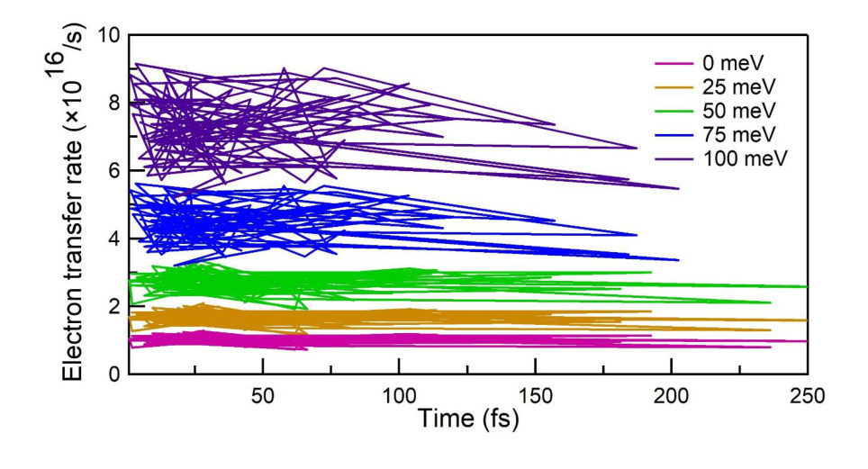
<figcaption class="paper-figure-caption"><b>Fig 1.</b> FIG. 1. The variation in electron transfer rate at each time step of the simulation is noted under different sets of electric field-assisted site energy difference values of 0, 25, 50, 75, and 100 meV. For the dynamical system of extended sites (long range), the applied bias or electric field drifts the electron transfer rate/kinetics up to a few hopping sites only; after that, it limits the carrier hopping due to the significant loss in rate by energy dispersion at each hopping step, which causes charge trapping. Here, the energy loss at each hopping steps is more for the larger amplitude of site energy fluctuation, which can be analysed by the dispersive parameter (see ref. 11). At the...</figcaption>
</figure>
<figure class="paper-figure-card">
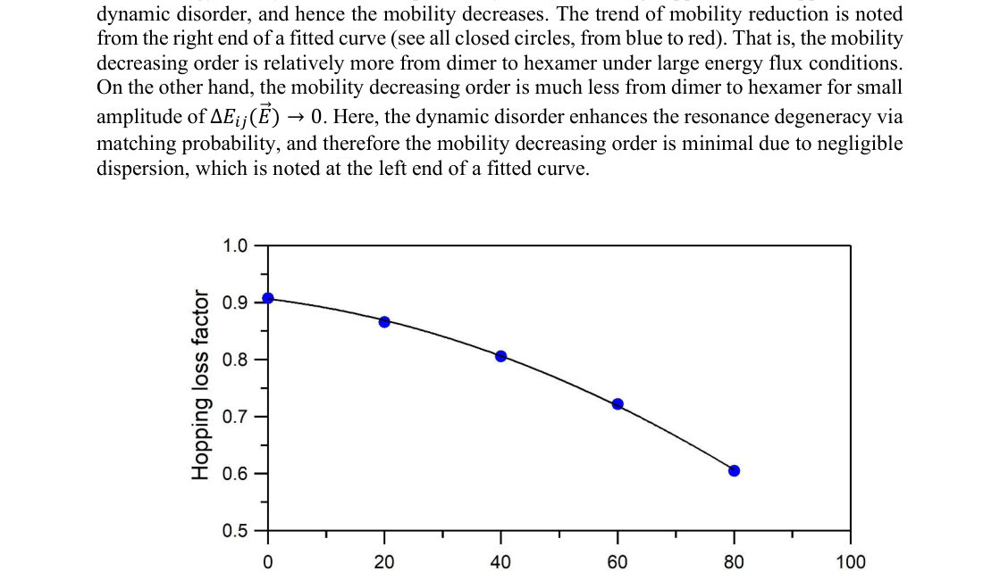
<figcaption class="paper-figure-caption"><b>Fig 2.</b> FIG. 3. Electron hopping delay is noted while increasing the applied electric field via the site energy difference (0, 20, 40, 60, and 80 meV) along the π-stacked molecular units of BDHTT- BBT. In this numerical simulation (Monte-Carlo) study, the structural oscillation time is fixed as 1 ps, and the molecular dynamics time step is 1 fs. The carrier propagation state is averaged from every 100 steps of position and velocity coordinates to get a better-approximation. The results are reproduced here from the previous study; see ref. 11 to validate the method. The carrier energy dispersion occurs over the hopping sites in an extended dynamical system, and it increases as the amplitude of...</figcaption>
</figure>
<figure class="paper-figure-card">
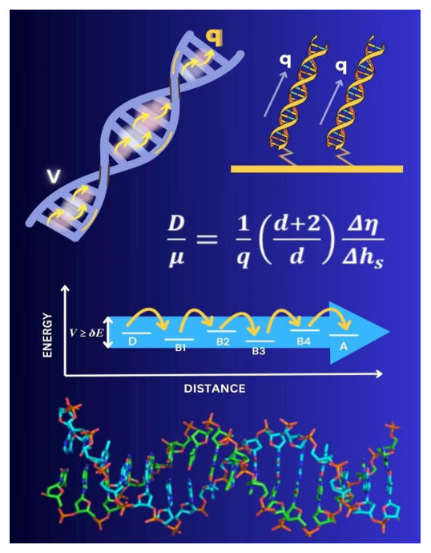
<figcaption class="paper-figure-caption"><b>Fig 3.</b> FIG. 4. The dynamic disorder-driven flickering resonance effect on charge mobility is incorporated by the entropy-ruled method. The site energy matching probability enhances the degeneracy, which is quantified by differential entropy, ℎ𝑆= 𝑙𝑛(√2𝜋𝑒𝜎𝐺), where 𝜎𝐺 is the Gaussian width. In this relation, 𝜎𝐺 is a deterministic parameter to decide the typical transport; whether it is a localization or delocalization transport. The static-to-dynamic disorder transition transport is here generalized using flickering resonance along with the entropy-ruled method,</figcaption>
</figure>
<figure class="paper-figure-card">
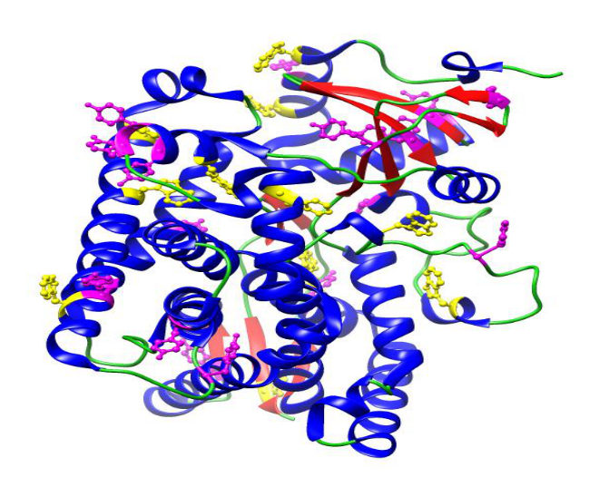
<figcaption class="paper-figure-caption"><b>Fig 4.</b> FIG. 5. Structural model of human mitochondrial cholesterol-metabolizing cytochrome P450 (CYP11A1, PDB ID: 3N9Y). The tryptophan (Trp) and tyrosine (Tyr) are shown in yellow and purple colours, respectively.</figcaption>
</figure>
</div>

<p><strong>Summary.</strong> The paper develops a novel entropy-ruled theory for charge transport in biomolecules subjected to dynamic disorder. It quantifies the role of degeneracy using differential entropy, showing that this quantum effect can fundamentally alter the expected transport mechanism. The findings suggest that under optimal conditions, charge movement resembles coherent band conduction rather than simple thermally activated hopping.</p>
<p><strong>Why it may be interesting.</strong> This work provides a sophisticated quantum mechanical framework to model charge transfer in complex, disordered biological media, bridging concepts from condensed matter physics (band theory) with biophysics (redox chemistry).</p>
<details>
<summary>Detailed structure</summary>
<p><strong>Main problem.</strong> The study addresses charge transport in biological systems, focusing on how dynamic disorder influences electron transfer rates and mobility across different ordering regimes.</p>
<p><strong>Main result.</strong> The theory demonstrates that for ultra-fast dynamical and degenerate cases, the electronic mobility transitions from thermally activated hopping to band-like behavior, quantified by differential entropy.</p>
<p><strong>Method.</strong> It proposes a 'flickering resonance-coupled entropy-ruled charge transport theory' formalism incorporating dynamic disorder effects via differential entropy ($h_S$).</p>
<p><strong>Model / system.</strong> The system models charge transport in biomolecules with extended hopping sites, relevant for bioenergetics and redox catalysis. The model incorporates coupling between electronic and nuclear dynamics (dynamic disorder).</p>
<p><strong>Key observables.</strong> Electron transfer rate ($k_{CT}$), diffusion-based mobility ($  ext{D}/\mu$), and the degeneracy-weighted differential entropy ($h_S$).</p>
<p><strong>Important parameters / regimes.</strong> Dynamic disorder strength, applied electric field ($\vec{E}$), site energy difference ($\Delta E_{ij}$), and the degree of resonance degeneracy.</p>
<p><strong>Assumptions / limitations.</strong> The theory assumes that dynamic disorder can be quantified by differential entropy and models the transition between hopping and band transport regimes using generalized rate equations.</p>
<p><strong>Figures summary.</strong> Figures illustrate how electron transfer rates change with applied electric fields, showing charge trapping at high bias in extended systems, and demonstrating mobility enhancement when degeneracy is maximized near zero energy flux.</p>
<p><strong>Paper structure.</strong> The paper develops a theoretical formalism by first introducing the concept of entropy-ruled transport, then deriving generalized rate equations that account for dynamic disorder via $h_S$, and finally analyzing the transition between hopping, band, and intermediate regimes under varying external biases.</p>
</details>
<details>
<summary>Abstract</summary>
<p>Charge transport (CT) in biological systems is of great interest due to its role in various functional activities like photobiology, bioenergetics, redox catalytic and other metabolic activities, etc. It has been observed by various studies that the presence of a dynamic disorder in biomolecules facilitates charge dynamics in the intermediate transport regime, i.e., far from hopping and towards a bank-like mechanism. Hitherto, the dynamic disorder (in a time scale, coupling between electronic and nuclear dynamics) weightage on CT in molecules is not well-established for the measurement of molecular conductivity from small to long-range ordering. With this motivation, we propose the flickering resonance-coupled entropy-ruled charge transport theory for transfer-rate and diffusion-based mobility (D/μ) calculations. The proposed analytical formalism incorporates the impact of dynamic disorder-correlated degeneracy (in a flickering-resonance manner) on the entropy-ruled electron transfer rate and diffusion-mobility, which are valid for localized hopping, delocalized band transport, and regimes in between. By this approach, it has been observed that the dynamics-driven electronic site matching probability enhances the degeneracy, which is quantified by the differential entropy. The analysis clearly shows that for ultra-fast dynamical and degenerate cases, the entropy-ruled mobility is transformed as band mobility, rather than the thermally activated hopping or diffusion process.</p>
</details>
<p><sub><a href="#top">↑ back to top</a></sub></p>

<p><a id="paper-2607.15489"></a></p>
<h3 id="circulation-statistics-in-rayleigh-benard-convection"><a href="http://arxiv.org/abs/2607.15489v1">Circulation Statistics in Rayleigh-Bénard Convection</a></h3>
<p><strong>Authors:</strong> Giovanni Saisse, Roshan J. Samuel, Luca Moriconi, Jörg Schumacher, Katepalli R. Sreenivasan<br>
<strong>Type:</strong> theory · <strong>Category:</strong> statistical mechanics · <strong>PDF:</strong> <a href="https://arxiv.org/pdf/2607.15489v1">https://arxiv.org/pdf/2607.15489v1</a><br>
<strong>Analysis basis:</strong> full PDF text, analyzed in chunks
<strong>Topic relevance:</strong> <code>non-equilibrium dynamics</code> <strong>2/5</strong> · <code>non-equilibrium universality</code> <strong>2/5</strong> · <code>Keldysh / 2PI / non-Gaussian methods</code> <strong>1/5</strong> · <code>analog quantum simulation</code> <strong>1/5</strong> · <code>driven-dissipative phase transition</code> <strong>1/5</strong></p>
<div class="figure-strip-hint">↔ Scroll figures horizontally</div>
<div class="paper-figures-scroll">
<figure class="paper-figure-card">
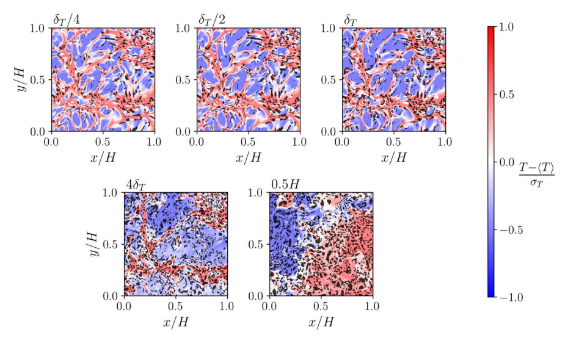
<figcaption class="paper-figure-caption"><b>Fig 1.</b> FIG. 1: Overlay of vortex cross-sections (shown as dark spots) on the temperature field. The</figcaption>
</figure>
<figure class="paper-figure-card">
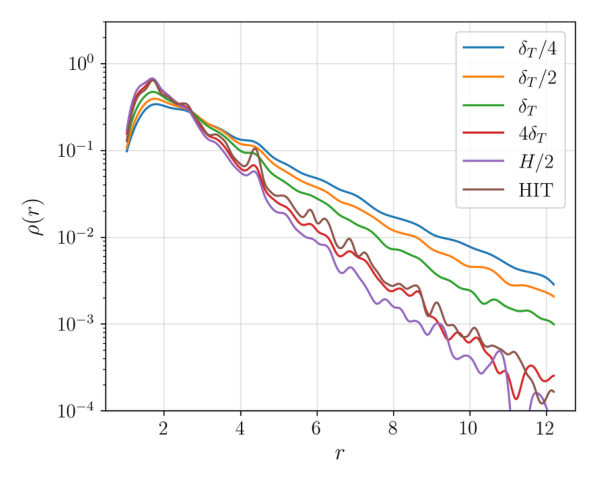
<figcaption class="paper-figure-caption"><b>Fig 2.</b> FIG. 2: Aspect-ratio PDFs of the identified vortex spots, with the best-fitting ellipses determined</figcaption>
</figure>
<figure class="paper-figure-card">
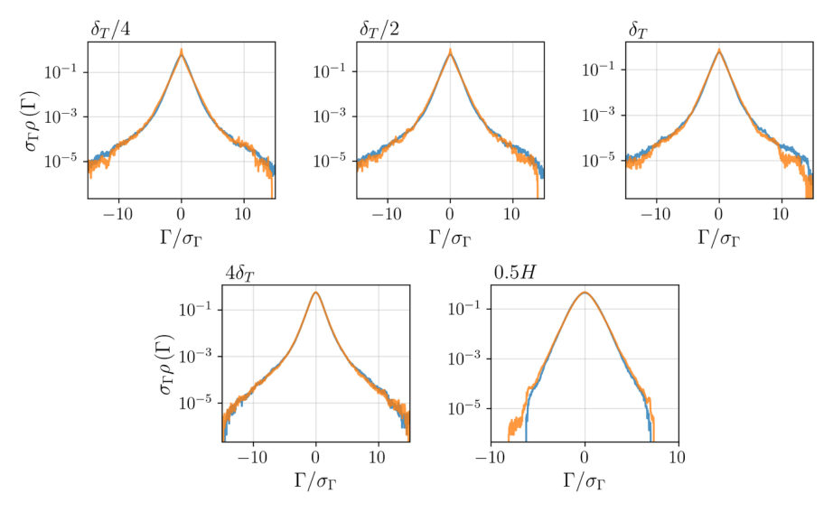
<figcaption class="paper-figure-caption"><b>Fig 3.</b> FIG. 3: Standardized circulation PDFs for square contours of size 50 × 50 grid cells, evaluated at</figcaption>
</figure>
<figure class="paper-figure-card">
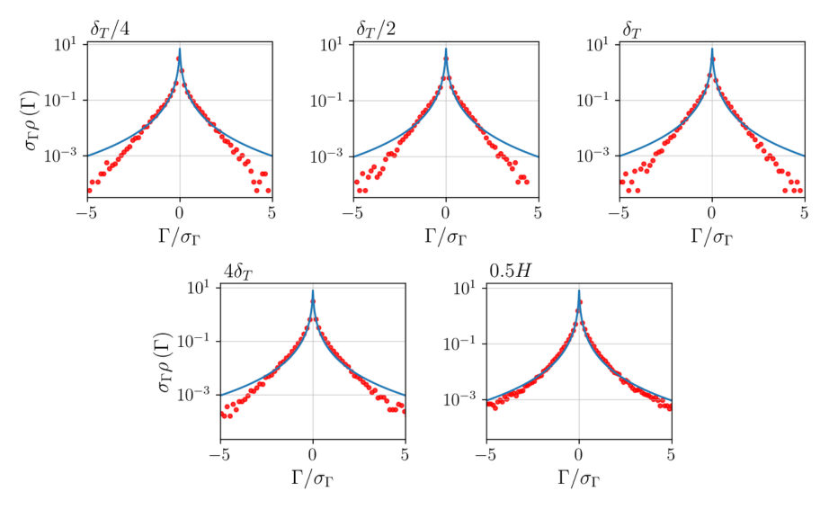
<figcaption class="paper-figure-caption"><b>Fig 4.</b> FIG. 4: Comparison of the analytical circulation PDFs for elementary vortices (HIT), given by</figcaption>
</figure>
<figure class="paper-figure-card">
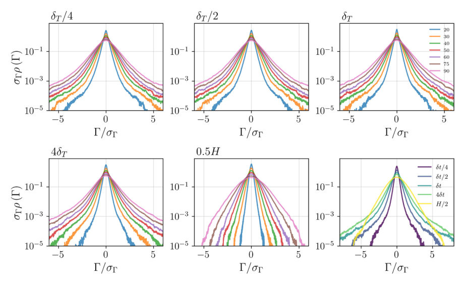
<figcaption class="paper-figure-caption"><b>Fig 5.</b> FIG. 5: Circulation PDFs for square contours of different sizes (side lengths indicated in the upper-</figcaption>
</figure>
</div>

<p><strong>Summary.</strong> This paper investigates how turbulence statistics, specifically velocity circulation, behave in Rayleigh-Bénard convection compared to idealized homogeneous isotropic turbulence. The authors find that while the statistical signatures of HIT persist within the thermal boundary layer, the local vortex dynamics are strongly influenced by temperature gradients and buoyancy effects. They employ advanced statistical mechanics tools to model the underlying physics governing vortex shape and circulation fluctuations.</p>
<p><strong>Why it may be interesting.</strong> While focused on classical fluid dynamics, the use of concepts like effective Boltzmann distributions for geometric parameters (aspect ratio) and the analysis of non-equilibrium fluctuations in confined systems share mathematical parallels with approaches used in analyzing quantum many-body systems or complex energy landscapes.</p>
<details>
<summary>Detailed structure</summary>
<p><strong>Main problem.</strong> To investigate whether statistical properties of velocity circulation observed in Homogeneous Isotropic Turbulence (HIT) persist or are modified in Rayleigh–Bénard convection (RBC).</p>
<p><strong>Main result.</strong> Circulation statistics within the thermal boundary layer show features akin to HIT, and the Area Rule remains well satisfied; outside this region, behavior resembles HIT governed by energy dissipation.</p>
<p><strong>Method.</strong> Direct Numerical Simulations (DNS) of Boussinesq equations combined with statistical analysis of circulation probability density functions (PDFs) and vortex geometry.</p>
<p><strong>Model / system.</strong> The study analyzes turbulent Rayleigh-Bénard Convection (RBC) using the Boussinesq approximation, comparing its statistics to established models for HIT. The analysis focuses on local vortex structures and global circulation fluxes.</p>
<p><strong>Key observables.</strong> Velocity circulation ($\Gamma[C]$), elementary vortex distribution, vortex aspect ratios ($r$), and standardized Circulation Probability Density Functions (PDFs).</p>
<p><strong>Important parameters / regimes.</strong> Rayleigh number ($  ext{Ra} = 10^9$) and Prandtl number ($   ext{Pr} = 0.7$); boundary layer thickness ($\delta T$).</p>
<p><strong>Assumptions / limitations.</strong> The analysis assumes that circulation fluctuations are dominated by localized vortex spots (Vortex Gas Model hypothesis) and models the aspect ratio distribution using an effective Boltzmann weight.</p>
<p><strong>Figures summary.</strong> Figures compare exact vs. reconstructed circulation PDFs, show collapse of PDFs for varying contour sizes within the TBL, and illustrate aspect-ratio distributions showing deviations from HIT near walls.</p>
<p><strong>Paper structure.</strong> The paper progresses by first establishing the comparison between RBC and HIT statistics in the TBL; it then analyzes vortex shape correlations with temperature; finally, it develops a theoretical framework using statistical mechanics to model the stationary distribution of vortex aspect ratios.</p>
</details>
<details>
<summary>Abstract</summary>
<p>Important statistical properties of velocity circulation in homogeneous isotropic turbulence (HIT) have been unveiled in recent years, raising the question of whether they persist, or are modified, in other classes of turbulent flows. Motivated by the dominant role of small-scale structures in the circulation fluctuations of HIT, we investigate their relevance in direct numerical simulations of Rayleigh-Bénard convection at a Rayleigh number of $10^9$ and Prandtl number of $O(1)$. Within the thermal boundary layer (TBL), the distribution of elementary vortices is found to be strongly correlated with the temperature field, while the statistics of their core aspect ratios is significantly altered. Additionally, the probability distribution functions of circulation, computed for planar contours which are parallel to the walls, display salient features closely akin to those observed in HIT, with the {\it Area Rule} (a connection between circulation statistics and minimal surfaces) remaining particularly well satisfied -- except for a possible transitional region at a distance of a few TBL thicknesses. Away from the TBL, as expected, the overall statistical behavior of these structures likewise resembles that of HIT, where the intermittent spatial distribution of small vortex tubes is instead determined by the energy dissipation field.</p>
</details>
<p><sub><a href="#top">↑ back to top</a></sub></p>

<p><a id="paper-2607.15964"></a></p>
<h3 id="hanbury-brown-twiss-effect-squeezed-gravitons-and-the-photon-correlations"><a href="http://arxiv.org/abs/2607.15964v1">Hanbury-Brown Twiss effect, squeezed gravitons and the photon correlations</a></h3>
<p><strong>Authors:</strong> Massimo Giovannini<br>
<strong>Type:</strong> theory · <strong>Category:</strong> other · <strong>PDF:</strong> <a href="https://arxiv.org/pdf/2607.15964v1">https://arxiv.org/pdf/2607.15964v1</a><br>
<strong>Analysis basis:</strong> full PDF text, analyzed in chunks
<strong>Topic relevance:</strong> <code>quantum optics experiment</code> <strong>2/5</strong> · <code>Keldysh / 2PI / non-Gaussian methods</code> <strong>1/5</strong> · <code>correlated cavity matter</code> <strong>1/5</strong> · <code>interference shaping light</code> <strong>1/5</strong> · <code>quantum measurements</code> <strong>1/5</strong></p>
<div class="figure-strip-hint">↔ Scroll figures horizontally</div>
<div class="paper-figures-scroll">
<figure class="paper-figure-card">
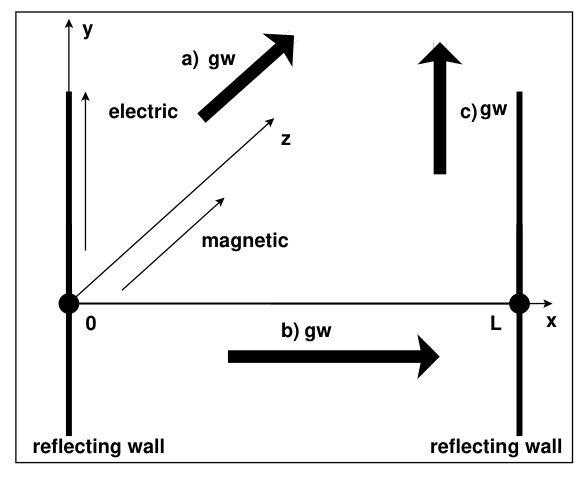
<figcaption class="paper-figure-caption"><b>Fig 1.</b> Figure 1: We illustrate the geometry of a cavity where the walls are located along the ˆx direction. If ˆk = ˆx the gravitational wave propagates long the cavity axis. In the other cases the gravitational wave propagates orthogonally to the axis of the cavity.</figcaption>
</figure>
<figure class="paper-figure-card">
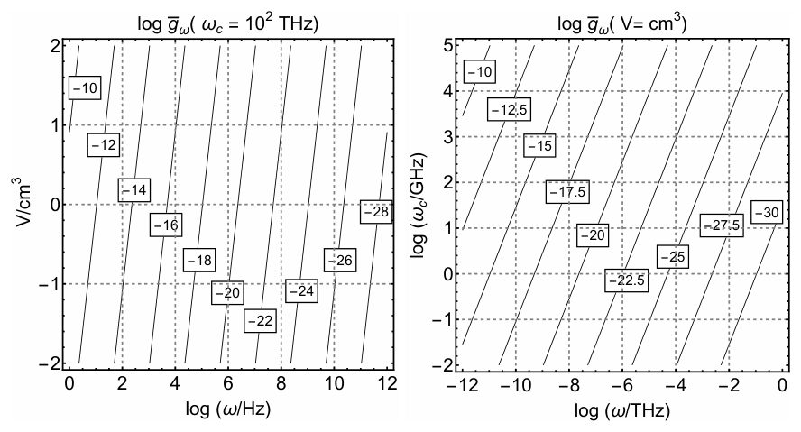
<figcaption class="paper-figure-caption"><b>Fig 2.</b> Figure 2: The common logarithm of the effective coupling is illustrated as a function of the frequen- cies of the gravitons and of the photons.</figcaption>
</figure>
<figure class="paper-figure-card">
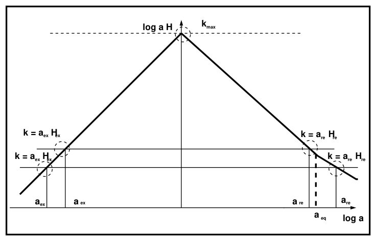
<figcaption class="paper-figure-caption"><b>Fig 3.</b> Figure 3: We approximately illustrate here the effective evolution of the comoving Hubble radius H as a function of the scale factor a. Common logarithms are employed on both axes. During the inflationary stage H ∝a while during the radiation and matter stages H ∝a−1 and H ∝a−1/2, respectively. What matters for the evolution of the field operators are the exit and reentry times corresponding to the moments where a given wavenumber crosses the comoving horizon. The reentry and the exit approximately coincide close to the maximal wavenumber of the spectrum kmax.</figcaption>
</figure>
</div>

<p><strong>Summary.</strong> This paper investigates the possibility of measuring relic gravitational wave statistics using photon interference in an optical cavity. By analyzing the coupled action and coherence functions, the authors prove that due to underlying symmetries, the measured Hanbury-Brown Twiss correlations of the photons are completely insensitive to the statistical properties of the gravitons. This places a fundamental limit on what can be inferred about the early universe's gravitational background from current photon measurements.</p>
<p><strong>Why it may be interesting.</strong> It provides a rigorous theoretical framework demonstrating fundamental limitations on experimental detection methods by proving that certain quantum correlations (graviton statistics) cannot be accessed via simpler measurements (photon intensity correlation).</p>
<details>
<summary>Detailed structure</summary>
<p><strong>Main problem.</strong> To determine if Hanbury-Brown Twiss (HBT) correlations measured from photons confined in an optical cavity can reveal the super-Poissonian statistical properties of relic gravitons interacting with them.</p>
<p><strong>Main result.</strong> The HBT correlations of the cavity photons are insensitive to the second-order coherence of the gravitons, meaning the graviton statistics cannot be inferred from photon intensity measurements.</p>
<p><strong>Method.</strong> The analysis uses generalized Glauber correlators extended to tensor fields (for gravitons) and electromagnetic fields (for photons), analyzing the total action derived from coupling gravity and electromagnetism.</p>
<p><strong>Model / system.</strong> The system models the interaction between cosmic relic gravitons (from zero-point fluctuations) and a quantized electromagnetic field confined within a closed optical resonator. The Hamiltonian analysis shows that the cavity photon number operator commutes with the full Hamiltonian, leading to the decoupling of coherence measurements.</p>
<p><strong>Key observables.</strong> Hanbury-Brown Twiss correlations ($g^{(2)}$), first-order coherence ($g^{(1)}$), and the degree of second-order coherence for both photons and gravitons.</p>
<p><strong>Important parameters / regimes.</strong> Cosmic graviton wavenumbers $O(k_p)$ ($\approx 0.002 	ext{ Mpc}^{-1}$); tensor-to-scalar ratio ($r_T$); small coupling limits.</p>
<p><strong>Assumptions / limitations.</strong> The analysis relies on extending Glauber correlators to tensor cases and assumes a conformally flat background metric for the action derivation.</p>
<p><strong>Figures summary.</strong> Not specified in notes, but the structure implies derivations of correlators (Eq. 2.16) and Hamiltonian evolution equations (B.10-B.17).</p>
<p><strong>Paper structure.</strong> The paper progresses by first establishing generalized Glauber correlators for vector/tensor fields, then applying these to derive the total action coupling photons and gravitons, culminating in a symmetry argument showing that photon coherence is decoupled from graviton statistics.</p>
</details>
<details>
<summary>Abstract</summary>
<p>Unlike the gravitational waves classically generated by moving macroscopic masses, the diffuse backgrounds of gravitons originate most likely from zero-point fluctuations of the gravitational field amplified by the evolution of the space-time curvature. The resulting entangled states lead to specific second-order correlation effects that could be eventually detected. For a quantitative analysis of this empirical expectation we scrutinize the interactions between the cosmic gravitons and the fundamental mode of a quantized electromagnetic field confined inside a closed optical resonator with perfectly-reflecting walls. We show that the Hanbury-Brown Twiss correlations of the photons are insensitive to the degrees of second-order coherence of the gravitons even barring for the exceedingly small couplings of the problem. Since the degree of second-order coherence of the photons does not reflect the correlation properties of the gravitons, the statistical properties of the gravitons (and their super-Poissonian statistics) cannot be inferred, even in principle, from the intensity correlations of the cavity modes.</p>
</details>
<p><sub><a href="#top">↑ back to top</a></sub></p>

<p><a id="paper-2607.15398"></a></p>
<h3 id="saturating-the-bayesian-nagaoka-hayashi-bound-within-numerical-precision-for-the-depolarization-su2-rotation-channel"><a href="http://arxiv.org/abs/2607.15398v1">Saturating the Bayesian Nagaoka-Hayashi bound within numerical precision for the depolarization SU(2) rotation channel</a></h3>
<p><strong>Authors:</strong> Leo Bia, Christos N. Gagatsos<br>
<strong>Type:</strong> theory · <strong>Category:</strong> quantum information and computing · <strong>PDF:</strong> <a href="https://arxiv.org/pdf/2607.15398v1">https://arxiv.org/pdf/2607.15398v1</a><br>
<strong>Analysis basis:</strong> full PDF text, analyzed in chunks
<strong>Topic relevance:</strong> <code>quantum measurements</code> <strong>2/5</strong> · <code>correlated / nonlocal dissipation</code> <strong>1/5</strong> · <code>entanglement &amp; information structure</code> <strong>1/5</strong> · <code>methods for driven-dissipative</code> <strong>1/5</strong></p>
<div class="figure-strip-hint">↔ Scroll figures horizontally</div>
<div class="paper-figures-scroll">
<figure class="paper-figure-card">
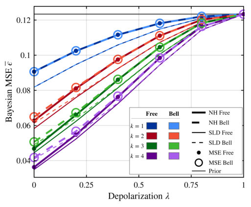
<figcaption class="paper-figure-caption"><b>Fig 1.</b> FIG. 1. Bayes risk and bounds for the SU(2) channel as a function of the depolarizing strength λ. Each number of chan- nel uses k is one hue, dark solid lines for the optimized probe and bright dashed lines of the same hue for the tensored Bell probe. Thick lines are the NH bound and thin lines the SLD bound. Markers are the achieved risk ¯ϵ⋆, filled dots for the optimized probe and open circles for the Bell probe. Markers lying on the thick lines show attainment of the NH bound, and the offset to the thin lines is the incompatibility cost. The two achieved-risk curves of each hue meet as λ grows, past which the tensored Bell probe is optimal. The gray line is the prior risk r2 p/5,...</figcaption>
</figure>
</div>

<p><strong>Summary.</strong> The authors investigate the fundamental limits of estimating multiple parameters characterizing an SU(2) qubit rotation corrupted by noise. They show that the optimized measurement strategy achieves the tight Bayesian Nagaoka-Hayashi bound within numerical precision. This confirms the optimality of the protocol relative to this advanced theoretical limit for the studied channel family.</p>
<p><strong>Why it may be interesting.</strong> This work provides a rigorous test case demonstrating how advanced information-theoretic bounds (like NH) can be numerically verified as achievable in quantum estimation protocols, which is crucial for designing optimal quantum sensors.</p>
<details>
<summary>Detailed structure</summary>
<p><strong>Main problem.</strong> The paper addresses the problem of multiparameter quantum estimation, aiming to find the minimum achievable error (Bayes risk) when estimating several parameters simultaneously using noisy quantum measurements.</p>
<p><strong>Main result.</strong> The optimized estimation strategy for a qubit rotation channel under depolarizing noise was shown to attain the Bayesian Nagaoka-Hayashi bound within numerical precision, suggesting this bound is tight for this specific channel family.</p>
<p><strong>Method.</strong> The problem is formulated as minimizing the weighted Bayesian Mean Square Error (MSE) using Semidefinite Programming (SDP), exploiting rotational symmetry to reduce the complexity of the joint optimization over probe and measurement.</p>
<p><strong>Model / system.</strong> The system models the single-shot estimation of parameters governing an SU(2) qubit rotation channel that is corrupted by depolarizing noise. The analysis considers $k$ parallel uses of this noisy channel.</p>
<p><strong>Key observables.</strong> Bayes risk ($ar{\epsilon}^*$), Bayesian Nagaoka-Hayashi bound ($ar{\epsilon}_{	ext{NH}}$), and the SLD Cramér-Rao bound ($ar{\epsilon}_{	ext{SLD}}$).</p>
<p><strong>Important parameters / regimes.</strong> Depolarizing noise strength ($\lambda$) and the number of parallel uses ($k$).</p>
<p><strong>Assumptions / limitations.</strong> The analysis is restricted to the class of parallel ancilla-assisted quantum strategies, and the attainment of the NH bound remains an open theoretical problem.</p>
<p><strong>Figures summary.</strong> Figure 1 compares the achieved risk ($ar{\epsilon}^*$) against the two theoretical bounds ($ar{\epsilon}_{	ext{SLD}}$ and $ar{\epsilon}_{	ext{NH}}$) as a function of noise strength ($\lambda$) for $k=1$ to $4$, showing the convergence of curves.</p>
<p><strong>Paper structure.</strong> The paper establishes the hierarchy of quantum estimation bounds, formulates the minimization problem via SDPs exploiting rotational symmetry, computes integrals exactly using quadrature methods, and compares the achieved risk against these theoretical limits across varying noise levels and uses.</p>
</details>
<details>
<summary>Abstract</summary>
<p>The Bayesian Nagaoka--Hayashi (NH) bound is a semidefinite lower bound on the Bayes risk of multiparameter estimation, tighter than the Bayesian symmertic logarithmic derivative (SLD) Cramér--Rao bounds, and whether it can be attained is an open problem. We study the single-shot estimation of a qubit rotation, all three parameters at once, under depolarizing noise and a uniform prior, with $k$ parallel uses of the channel. Rotational covariance reduces the joint optimization of probe, measurement, and estimator, and the NH bound itself, to small semidefinite programs, solvable through $k=4$. At every number of uses and noise strength the optimized strategy reaches the NH bound within the numerical precision of the calculation, numerical evidence that the bound is attained for this channel family, while the SLD bound lies strictly below and is never attained. As the noise grows the optimal probe collapses to the tensored Bell state.</p>
</details>
<p><sub><a href="#top">↑ back to top</a></sub></p>

<p><a id="paper-2607.15559"></a></p>
<h3 id="agnostic-learning-of-qudit-stabilizer-states"><a href="http://arxiv.org/abs/2607.15559v1">Agnostic learning of qudit stabilizer states</a></h3>
<p><strong>Authors:</strong> Wentao Qi, Boyan Xu, Shiguang Feng, Lvzhou Li<br>
<strong>Type:</strong> theory · <strong>Category:</strong> quantum information and computing · <strong>PDF:</strong> <a href="https://arxiv.org/pdf/2607.15559v1">https://arxiv.org/pdf/2607.15559v1</a><br>
<strong>Analysis basis:</strong> full PDF text, analyzed in chunks
<strong>Topic relevance:</strong> <code>quantum measurements</code> <strong>2/5</strong> · <code>entanglement &amp; information structure</code> <strong>1/5</strong> · <code>measurement-induced transitions</code> <strong>1/5</strong></p>
<div class="figure-strip-hint">↔ Scroll figures horizontally</div>
<div class="paper-figures-scroll">
<figure class="paper-figure-card">
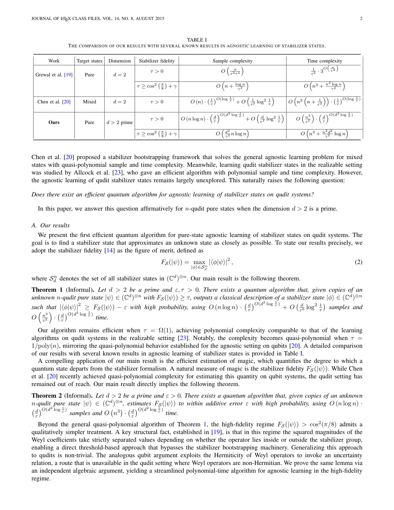
<figcaption class="paper-figure-caption"><b>Fig 1.</b> Low-resolution page preview, page 2</figcaption>
</figure>
<figure class="paper-figure-card">
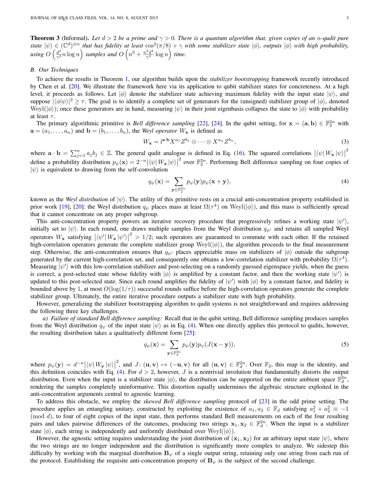
<figcaption class="paper-figure-caption"><b>Fig 2.</b> Low-resolution page preview, page 3</figcaption>
</figure>
<figure class="paper-figure-card">
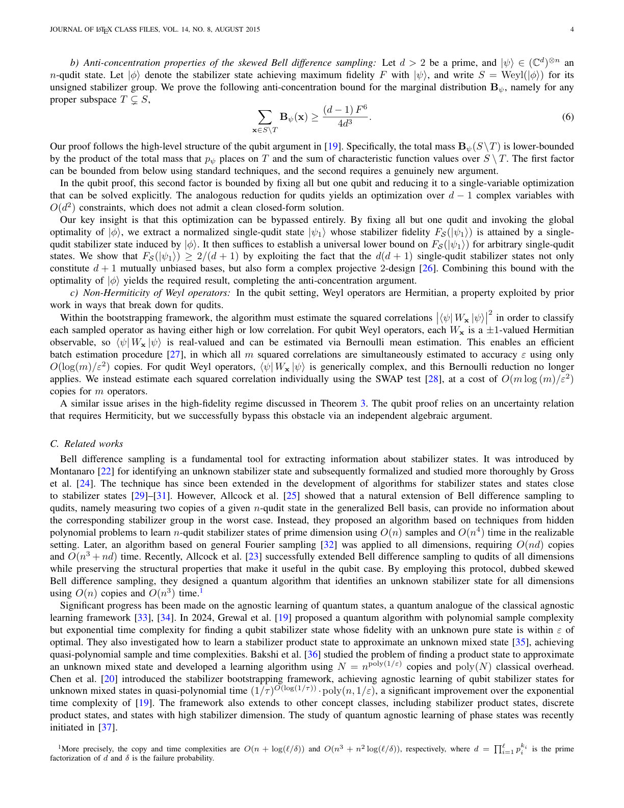
<figcaption class="paper-figure-caption"><b>Fig 3.</b> Low-resolution page preview, page 4</figcaption>
</figure>
<figure class="paper-figure-card">
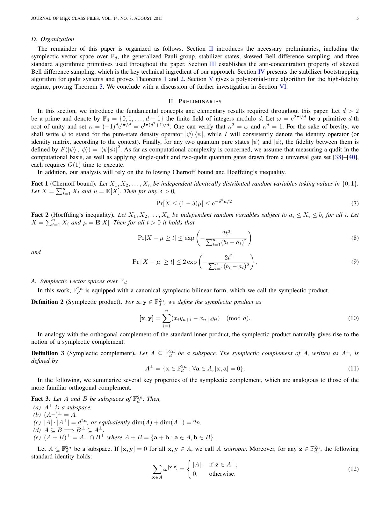
<figcaption class="paper-figure-caption"><b>Fig 4.</b> Low-resolution page preview, page 5</figcaption>
</figure>
<figure class="paper-figure-card">
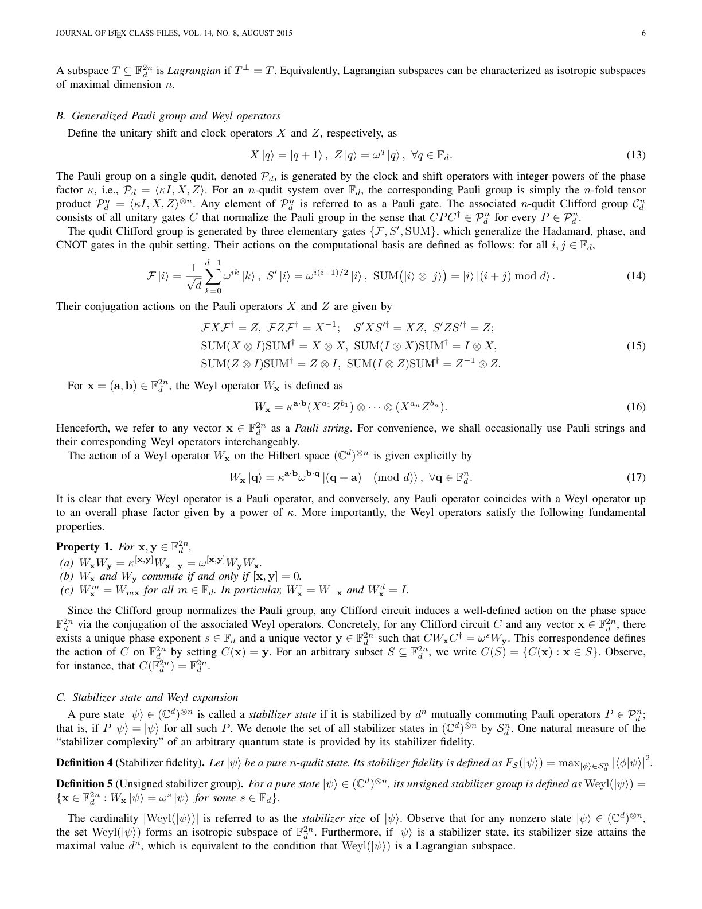
<figcaption class="paper-figure-caption"><b>Fig 5.</b> Low-resolution page preview, page 6</figcaption>
</figure>
</div>

<p><strong>Summary.</strong> This paper introduces an efficient quantum algorithm to estimate the best approximation of an unknown qudit state within the set of stabilizer states. It achieves this by generalizing a known qubit technique, overcoming structural hurdles specific to higher dimensions using advanced sampling methods. This advancement is vital for developing robust quantum error correction and characterizing complex quantum states in qudit systems.</p>
<p><strong>Why it may be interesting.</strong> This work extends fundamental quantum information protocols from qubits to higher-dimensional qudits, which is crucial for realizing fault-tolerant quantum computation using physical systems that naturally support qudit encoding (e.g., superconducting circuits or photon polarization).</p>
<details>
<summary>Detailed structure</summary>
<p><strong>Main problem.</strong> The core problem is agnostic learning of stabilizer states, which involves finding the best approximation of an unknown quantum state $|\psi
angle$ within the restricted set of stabilizer states $S$, especially when noise corrupts the state.</p>
<p><strong>Main result.</strong> The authors present the first efficient quantum algorithm for this task in qudit systems ($d>2$), successfully generalizing a known qubit framework. The algorithm achieves high fidelity estimation with complexity scaling polynomially in system parameters and inversely with the target fidelity $  au$.</p>
<p><strong>Method.</strong> The technique generalizes the stabilizer bootstrapping framework using skewed Bell difference sampling, which is necessary because standard methods fail for qudits. This involves iterative refinement based on measuring correlations over Weyl operators.</p>
<p><strong>Model / system.</strong> The system under study consists of $n$-qudit pure states $|\psi
angle$ in a dimension $d$, where $d$ is assumed to be an odd prime. The target set of states are the stabilizer states, which are central to quantum error correction theory.</p>
<p><strong>Key observables.</strong> Stabilizer Fidelity ($ ext{FS}(|\psi
angle)$), $|\langle\phi|\psi
angle|^2$, and correlation measurements $\left|\langle\psi| W_x |\psi
angle
ight|^2$.</p>
<p><strong>Important parameters / regimes.</strong> $d$ (odd prime dimension), $n$ (number of qudits), $    au$ (target fidelity threshold), and $\epsilon$ (approximation error).</p>
<p><strong>Assumptions / limitations.</strong> The primary assumption is that the dimension $d$ is an odd prime, which allows for the use of skewed Bell difference sampling. The analysis also relies on establishing anti-concentration properties for certain marginal distributions.</p>
<p><strong>Figures summary.</strong> Figure 1 illustrates the quantum circuit required for the SWAP test between two $n$-qudit states; other figures detail the transformation process using Clifford gates in a related context (Chunk 3 notes).</p>
<p><strong>Paper structure.</strong> The paper develops the theory by first addressing the generalization of the learning framework to qudits, detailing the necessary sampling techniques (skewed Bell difference sampling), and then presenting the complexity bounds for state estimation and magic number calculation. A separate section details circuit construction rules for subspace transformations.</p>
</details>
<details>
<summary>Abstract</summary>
<p>Learning a classical description of a quantum state is a fundamental task in quantum computation. Among the most important classes of quantum states are stabilizer states, which play a central role in quantum error correction and fault-tolerant computation. To mitigate the effects of realistic noise, agnostic learning of stabilizer states has emerged as a natural and well-motivated problem. Recently, Chen \textit{et al.} [STOC'25, p. 429-438] resolved this problem for qubit systems by using a stabilizer bootstrapping framework. However, the agnostic learning of qudit stabilizer states remains largely unexplored, since the qudit setting introduces fundamental structural differences that prevent a direct generalization of existing qubit techniques. In this paper, we successfully generalize the stabilizer bootstrapping framework to qudit systems and present the first efficient quantum algorithm for agnostic learning of qudit stabilizer states. Specifically, given copies of an unknown $n$-qudit pure state $|ψ\rangle$ that has fidelity $τ$ with some stabilizer state, our algorithm outputs a stabilizer state $|φ\rangle$ such that $\left| \braket{φ|ψ} \right|^2 \geq τ- \varepsilon$ with high probability. The algorithm uses only single-copy and four-copy measurements, and its sample and time complexity scale as $(d/τ)^{O(d^2 \log(1/τ))} \cdot \mathrm{poly}(n, 1/\varepsilon)$, where the dimension $d$ is an odd prime. As a direct corollary, our algorithm enables efficient estimation of the magic of a quantum state, as quantified by its stabilizer fidelity. Completing the picture, we also present a streamlined algorithm for the high-fidelity regime $τ> \cos^2(π/8)$, establishing a qudit analogue of the threshold-based approach in prior qubit work.</p>
</details>
<p><sub><a href="#top">↑ back to top</a></sub></p>

<p><a id="paper-2607.15954"></a></p>
<h3 id="altermagnetism-without-a-long-range-order"><a href="http://arxiv.org/abs/2607.15954v1">Altermagnetism without a long-range order</a></h3>
<p><strong>Authors:</strong> V. E. Valiulin, A. V. Mikheyenkov, K. I. Kugel<br>
<strong>Type:</strong> theory · <strong>Category:</strong> strongly correlated electrons · <strong>PDF:</strong> <a href="https://arxiv.org/pdf/2607.15954v1">https://arxiv.org/pdf/2607.15954v1</a><br>
<strong>Analysis basis:</strong> full PDF text, analyzed in chunks
<strong>Topic relevance:</strong> <code>analog quantum simulation</code> <strong>2/5</strong> · <code>Keldysh / 2PI / non-Gaussian methods</code> <strong>1/5</strong> · <code>entanglement &amp; information structure</code> <strong>1/5</strong></p>
<div class="figure-strip-hint">↔ Scroll figures horizontally</div>
<div class="paper-figures-scroll">
<figure class="paper-figure-card">

<figcaption class="paper-figure-caption"><b>Fig 1.</b> Figure 1: (Color online) Dependence of the spin–spin correlation function 𝑐𝑔at nearest neighbors and of the spin–pseudospin on-site 𝑚0 and inter-site 𝑚𝑔correlation functions on 𝑇and on the inter- subsystem exchange 𝐾. The curves forming the “platypus nose” are 𝑚0 (𝑚0 &lt; 0) and 𝑚𝑔(𝑚𝑔&gt; 0). The numbers 1 ÷ 8 enumerate the temperature values: 1 – 𝑇= 0.1, 2 – 𝑇= 0.2, etc. The lower curves correspond to 𝑐𝑔(the limits of 𝑇are indicated).</figcaption>
</figure>
<figure class="paper-figure-card">

<figcaption class="paper-figure-caption"><b>Fig 2.</b> Figure 2: (Color online) 2D lattice. Evolution of the heat capacity with a change in 𝑇at a fixed exchange parameter 𝐾. The colors correspond to different values of 𝐾(values of 𝐾are indicated near the peaks). Upon reaching the critical value 𝐾𝑐, a peak is observed, the height of which increases with |𝐾𝑐|.</figcaption>
</figure>
<figure class="paper-figure-card">

<figcaption class="paper-figure-caption"><b>Fig 3.</b> Figure 3: (Color online) 2D lattice. Susceptibility as a function of temperature 𝑇at the fixed inter-subsystem exchange 𝐾. The dashed line corresponds to the spin–spin susceptibility 𝜒𝑠𝑠and the solid line – to the spin–pseudospin susceptibility 𝜒𝑠𝑡. Colors correspond to different values of 𝐾.</figcaption>
</figure>
<figure class="paper-figure-card">

<figcaption class="paper-figure-caption"><b>Fig 4.</b> Figure 4: (Color online) Spectra of elementary excitations 𝜔𝑎𝑐(𝐪) and 𝜔𝑜𝑝𝑡(𝐪) (17) at 𝑇= 0.3. Top: 𝐾= −0.4, weak splitting. Bottom: 𝐾= −3.0, strong splitting. In the second case, the upper regions of the spectral branches form a nearly dispersionless region. A quarter of the Brillouin zone is shown. For any 𝑇and 𝐾at the symmetrical points 𝚪= (0, 0) and 𝐐= (𝜋, 𝜋) in the Brillouin zone 𝜔𝑜𝑝𝑡(𝚪) ≥𝜔𝑎𝑐(𝚪) = 0 and 𝜔𝑎𝑐(𝐐) ≥𝜔𝑜𝑝𝑡(𝐐) ≥0.</figcaption>
</figure>
<figure class="paper-figure-card">

<figcaption class="paper-figure-caption"><b>Fig 5.</b> Figure 5: (Color online) Phase diagram - regions with zero and nonzero spin–pseudospin correlations are presented. The blue curve is the phase boundary in 1𝐷and the red curve – in 2𝐷.</figcaption>
</figure>
</div>

<p><strong>Summary.</strong> This theoretical work explores altermagnetism—a magnetic state characterized by specific symmetries—in models lacking conventional long-range order. Using advanced Green's function techniques, the authors demonstrate that a unique 'altermagnetic liquid' phase can exist at finite temperatures. This finding expands the understanding of correlated electron physics beyond traditional magnetically ordered states.</p>
<p><strong>Why it may be interesting.</strong> While focused on condensed matter magnetism, the concept of emergent order parameters (like spin-pseudospin correlation) existing without breaking translational symmetry is highly relevant to understanding quantum criticality in complex correlated systems.</p>
<details>
<summary>Detailed structure</summary>
<p><strong>Main problem.</strong> The study investigates how altermagnetic behavior can emerge in quantum materials without requiring conventional long-range magnetic or orbital order.</p>
<p><strong>Main result.</strong> The authors establish the concept of an 'altermagnetic paramagnet' by showing that a composite state with nonzero spin-pseudospin correlations exists above a critical coupling, even when average spins are zero.</p>
<p><strong>Method.</strong> Theoretical analysis employing the rotation-invariant Green's function method (RGM) to calculate correlation functions and excitation spectra.</p>
<p><strong>Model / system.</strong> The system is modeled using the Kugel–Khomskii spin–pseudospin model, an SU(2) x SU(2) symmetric Hamiltonian applied to lattices (square lattice and linear chain).</p>
<p><strong>Key observables.</strong> Spin-spin and spin-pseudospin correlation functions, excitation spectra (acoustic and optical branches), heat capacity, and susceptibilities.</p>
<p><strong>Important parameters / regimes.</strong> Critical intersubsystem exchange coupling Kc(T); temperature T; and the ratio of various exchange couplings J, I, and K.</p>
<p><strong>Assumptions / limitations.</strong> The analysis relies on the RGM approach to handle finite-temperature effects while maintaining zero single-site average magnetization ($\langle \mathbf{S}_i 
angle = 0$).</p>
<p><strong>Figures summary.</strong> Figures illustrate correlation functions showing non-zero values at critical points, heat capacity exhibiting step changes, and excitation spectra splitting into distinct acoustic and optical branches.</p>
<p><strong>Paper structure.</strong> The paper systematically analyzes the model on 2D and 1D lattices, deriving Green's function expressions for various correlations and excitations, culminating in a phase diagram mapping out the transition to the altermagnetic liquid state.</p>
</details>
<details>
<summary>Abstract</summary>
<p>The Kugel-Khomskii spin-pseudospin model, originally developed for transition-metal compounds with orbital degrees of freedom, has recently been reinterpreted in the context of altermagnetism. In this work, we theoretically investigate the emergence of altermagnetic behavior in the absence of long-range magnetic or orbital order. Using the rotation-invariant Green's function method for the SU(2) x SU(2) symmetric model on a square lattice and on a linear chain, we analyze spin-spin and spin-pseudospin correlation functions, excitation spectra, heat capacity, and susceptibilities. We show that beyond a critical intersubsystem exchange Kc(T), a composite state arises with nonzero spin-pseudospin correlations, even though the average spin and pseudospin at each site are zero. The excitation spectrum splits into acoustic and optical branches, with nodal lines along qx = qy - a direct signature of altermagnetic symmetry. A peak in heat capacity and a jump in susceptibility are observed at the phase boundary. In 1D, the phase boundary is nonmonotonic and demonstrates reentrant transition. These results establish the concept of an "altermagnetic paramagnet" or "altermagnetic liquid" without long-range order, relevant for low-dimensional and strongly fluctuating systems.</p>
</details>
<p><sub><a href="#top">↑ back to top</a></sub></p>

<p><a id="paper-2607.15682"></a></p>
<h3 id="neural-non-equilibrium-hamiltonian-monte-carlo-for-corrected-boltzmann-sampling"><a href="http://arxiv.org/abs/2607.15682v1">Neural Non-Equilibrium Hamiltonian Monte Carlo for Corrected Boltzmann Sampling</a></h3>
<p><strong>Authors:</strong> Moxian Qian<br>
<strong>Type:</strong> theory · <strong>Category:</strong> statistical mechanics · <strong>PDF:</strong> <a href="https://arxiv.org/pdf/2607.15682v1">https://arxiv.org/pdf/2607.15682v1</a><br>
<strong>Analysis basis:</strong> full PDF text, analyzed in chunks
<strong>Topic relevance:</strong> <code>non-equilibrium dynamics</code> <strong>2/5</strong> · <code>methods for driven-dissipative</code> <strong>1/5</strong> · <code>non-equilibrium universality</code> <strong>1/5</strong></p>
<div class="figure-strip-hint">↔ Scroll figures horizontally</div>
<div class="paper-figures-scroll">
<figure class="paper-figure-card">

<figcaption class="paper-figure-caption"><b>Fig 1.</b> Figure 1: NHMC path construction and recorded-work corrections. After training, the learned proposal parameters are fixed, and the resulting proposal generates complete stochastic Hamil- tonian paths. The recorded work combines endpoint target/base terms with per-stage forward– reverse momentum log-ratios and, when present, discrete-move log-ratios. The stage formula shown in the schematic suppresses this optional discrete term. The same quantity supports path- SNIS, normalizer/free-energy estimation, and independent path-IMH. The round-trip branch instead acts directly on configurations: starting from the current x, it traverses the forward-oriented path Γx : u →x in reverse to a shared...</figcaption>
</figure>
<figure class="paper-figure-card">

<figcaption class="paper-figure-caption"><b>Fig 2.</b> Figure 2: Neural NHMC on the DW4 target. The complete learned path proposal, including the recorded stochastic sign-flip move, covers all four sign modes, while path-IMH correction shifts the empirical mode masses to the asymmetric target induced by the linear tilt. White contours give the exact target reference.</figcaption>
</figure>
<figure class="paper-figure-card">

<figcaption class="paper-figure-caption"><b>Fig 3.</b> Figure 3: Two-dimensional lattice ϕ4 benchmark on the 8 × 8 κ scan using NHMC proposal evalua- tions with SNIS correction. Curves compare raw proposal observables, SNIS-corrected observables, and the high-statistics HMC reference for ⟨|M|⟩, susceptibility, and the Binder cumulant. The SNIS ESS fraction ranges from 0.054 to 0.599 across the scan.</figcaption>
</figure>
<figure class="paper-figure-card">

<figcaption class="paper-figure-caption"><b>Fig 4.</b> Figure 4: Shared-bridge round-trip NHMC-MH transition. Starting from xk, the algorithm traverses the forward-oriented path Γx : u →xk in reverse to recover u, then follows Γy : u →y to the candidate. One Metropolis decision accepts y or retains xk. The curves are realized invertible path maps conditional on the sampled auxiliary records; their forward orientations define the two work values.</figcaption>
</figure>
<figure class="paper-figure-card">

<figcaption class="paper-figure-caption"><b>Fig 5.</b> Figure 5: DW2 neural NHMC time trace. The left panel follows real forward trajectories from the Gaussian base through the learned Hamiltonian path, with proposal stage t on the horizontal axis and the double-well coordinate x0 on the vertical axis. The right panel applies the learned reverse path to exact target samples and traces the pullback toward the base. For this fixed proposal, path-SNIS ESS is 43.4% and the reverse pullback standard deviation is 1.16.</figcaption>
</figure>
</div>

<p><strong>Summary.</strong> This paper introduces Neural Non-Equilibrium Hamiltonian Monte Carlo (NHMC), a novel sampler that learns stochastic paths and corrects their statistical weights using non-equilibrium work derived from path ratios. It demonstrates that NHMC significantly improves sampling quality for complex systems like lattice $\phi^4$ models by providing robust estimators for free energies and observables even when direct endpoint densities are hard to calculate.</p>
<p><strong>Why it may be interesting.</strong> The rigorous application of non-equilibrium fluctuation theorems to machine learning proposals provides a powerful, theoretically grounded way to improve sampling efficiency in many-body physics simulations beyond standard HMC or simple flow matching.</p>
<details>
<summary>Detailed structure</summary>
<p><strong>Main problem.</strong> The core problem is accurately sampling from unnormalized Boltzmann densities, which is difficult for classical methods when modes are separated or proposals fail to preserve the target distribution.</p>
<p><strong>Main result.</strong> The proposed Neural Non-Equilibrium Hamiltonian Monte Carlo (NHMC) method successfully generates corrected estimates of free energies and expectation values by utilizing recorded non-equilibrium work derived from path ratios.</p>
<p><strong>Method.</strong> NHMC is a 'train-then-correct' learned Hamiltonian sampler that learns stochastic paths toward the target distribution. Corrections are achieved using identities related to non-equilibrium work (like Jarzynski's equality) applied via Path-SNIS or path-IMH sampling.</p>
<p><strong>Model / system.</strong> The method is tested on various physical targets, including double-well potentials ($\phi^4$ models), finite-volume lattice $\phi^4$ systems, and molecular internal coordinates (e.g., Ala4, Ala6).</p>
<p><strong>Key observables.</strong> Action overlap, log-weight spread, integrated autocorrelation time ($  au_{    ext{int}}$), free-energy differences, magnetization ($|M|$), and susceptibility ($\chi$).</p>
<p><strong>Important parameters / regimes.</strong> Path overlap sufficiency is critical; the method performs well when sufficient path overlap exists between proposal and reference paths.</p>
<p><strong>Assumptions / limitations.</strong> The derivation relies on the mutual absolute continuity of the forward and reverse path laws, and performance degrades significantly if path overlap is poor.</p>
<p><strong>Figures summary.</strong> Figures illustrate NHMC path construction and recorded-work corrections; specific tables compare $\phi^4$ observables (like $|M|$ and $\chi$) across different sampling chains (HMC vs. round-trip NHMC-MH) and show action overlap improvements.</p>
<p><strong>Paper structure.</strong> The paper introduces the theoretical framework of NHMC using non-equilibrium work, derives estimators like Path-SNIS, validates it on simple potentials (DW), and then applies and compares its performance against established methods (HMC, MD) across complex lattice ($\phi^4$) and molecular systems.</p>
</details>
<details>
<summary>Abstract</summary>
<p>Sampling from an unnormalized Boltzmann density requires proposals that move probability mass globally while retaining enough path-probability information for statistical correction. We introduce Neural Non-Equilibrium Hamiltonian Monte Carlo (NHMC), a train-then-correct learned Hamiltonian sampler. Starting from a tractable base distribution, NHMC learns stochastic Hamiltonian-style paths toward the target. Once training is complete, the learned proposal parameters are fixed; the proposal then generates complete paths and endpoint configurations, which are statistically corrected using the recorded non-equilibrium work. This dimensionless generalized work is determined by the probability ratio between the forward proposal path and a reverse reference path. During training, minimizing its mean reduces a path-space KL divergence and controls an upper bound on endpoint mismatch. During evaluation, the same quantity defines weights for self-normalized importance sampling on paths (path-SNIS), estimates normalizing constants or free-energy differences, and gives the acceptance ratio for path-space independent Metropolis-Hastings (path-IMH). The same forward-reverse laws also define a shared-bridge round-trip Metropolis kernel that acts directly on configurations and preserves the Boltzmann target. On double-well and finite-volume lattice $φ^4$ targets, the NHMC construction gives corrected estimates when path overlap is sufficient; when overlap is poor, weight degeneracy, low acceptance, and long autocorrelation expose proposal failure. We additionally report a molecular internal-coordinate feasibility study using an MD prior and learned-force path proposal.</p>
</details>
<p><sub><a href="#top">↑ back to top</a></sub></p>

<p><a id="paper-2607.15744"></a></p>
<h3 id="grovers-algorithm-for-image-edge-detection"><a href="http://arxiv.org/abs/2607.15744v1">Grover's algorithm for image edge detection</a></h3>
<p><strong>Authors:</strong> Pulak Ranjan Giri, Kazuhiro Saito<br>
<strong>Type:</strong> both · <strong>Category:</strong> quantum information and computing · <strong>PDF:</strong> <a href="https://arxiv.org/pdf/2607.15744v1">https://arxiv.org/pdf/2607.15744v1</a><br>
<strong>Analysis basis:</strong> full PDF text, analyzed in chunks
<strong>Topic relevance:</strong> <code>QC/QI experiment</code> <strong>2/5</strong> · <code>quantum measurements</code> <strong>1/5</strong></p>
<div class="figure-strip-hint">↔ Scroll figures horizontally</div>
<div class="paper-figures-scroll">
<figure class="paper-figure-card">

<figcaption class="paper-figure-caption"><b>Fig 1.</b> Fig. 1. (a) A 4×4 digital image represented as a two-dimensional lattice of size 4 × 4, (b) four 2 × 2 blocks of the 4 × 4 two-dimensional lattice.</figcaption>
</figure>
<figure class="paper-figure-card">

<figcaption class="paper-figure-caption"><b>Fig 2.</b> Fig. 2. Qiskit circuit for Grover’s search algorithm with N = 4 elements for the quantum edge detection.</figcaption>
</figure>
<figure class="paper-figure-card">

<figcaption class="paper-figure-caption"><b>Fig 3.</b> Fig. 3. (a) A L1 × L2 = 330 × 350 image taken from the BSDS500 database, (b) edge detected by numerical analysis of Grover’s search on the full image, edge detected by Grover’s search on 2 × 2 blocks of the image with (c) qasm simulator and with (d) ibm sydney(fake) device with noise.</figcaption>
</figure>
</div>

<p><strong>Summary.</strong> This paper proposes using Grover's quantum search algorithm to accelerate the edge detection process in digital images. By restricting the problem to small $2 	imes 2$ blocks, they demonstrate a method robust enough for current noisy quantum hardware simulations. The work shows that this quantum approach offers high success probability compared to existing methods.</p>
<p><strong>Why it may be interesting.</strong> This work directly applies a fundamental quantum algorithm (Grover's) to a practical signal processing problem. For AMO physicists interested in quantum computation, it serves as an example of mapping physical measurement tasks onto quantum circuits suitable for near-term devices.</p>
<details>
<summary>Detailed structure</summary>
<p><strong>Main problem.</strong> The core problem is performing edge detection on a digital image, which requires locating gradients across pixel intensities.</p>
<p><strong>Main result.</strong> The authors demonstrate that using Grover's algorithm provides a robust method for quantum edge detection with high success probability, outperforming other quantum approaches tested on current NISQ devices.</p>
<p><strong>Method.</strong> They adapt Grover's search algorithm to find the marked 'edge pixels' within an image block, simulating this process using Qiskit circuits.</p>
<p><strong>Model / system.</strong> The model is a digital image ($L_1 	imes L_2$ lattice) whose edge detection problem is mapped onto a quantum search problem. The implementation is restricted to small $2 	imes 2$ blocks for compatibility with NISQ hardware.</p>
<p><strong>Key observables.</strong> The measurement result $
ho_i = |\langle t_i|\psi_f
angle|^2$, which indicates the presence of an edge pixel with high probability.</p>
<p><strong>Important parameters / regimes.</strong> The search space size $N$ (total pixels in a block) and the number of marked elements $M$ (edge pixels). The simulation uses qubits for small blocks ($N=4$).</p>
<p><strong>Assumptions / limitations.</strong> The primary assumption is that Grover's algorithm can be effectively applied to image processing tasks. A major limitation noted is the necessity of dividing the large image into smaller, manageable blocks.</p>
<p><strong>Figures summary.</strong> Figure 1 illustrates the division of a $4 	imes 4$ lattice into four $2 	imes 2$ blocks. Figure 2 shows the Qiskit circuit for Grover's search on $N=4$. Figure 3 compares sample edges from numerical analysis, simulation on $2 	imes 2$ blocks, and noisy device simulation.</p>
<p><strong>Paper structure.</strong> The paper introduces edge detection as a problem solvable by quantum search. It details the adaptation of Grover's algorithm for this task, presents the implementation using small image blocks ($2	imes 2$), and validates the results through comparison with classical numerical analysis and noisy hardware simulations.</p>
</details>
<details>
<summary>Abstract</summary>
<p>Grover's algorithm is one of the most significant quantum algorithms, enabling the search for a marked element in an unsorted database quadratically faster than classical search algorithms. We utilize Groves's algorithm to detect the edges of a digital image faster than any classical edge detection methods. The high success probability of our method in detecting image edges, compared to most existing quantum edge detection methods, makes it a more suitable candidate for use in the presence of noise on current quantum devices. We implemented our model for the $2\times 2$ blocks of the image using a two-qubit Qiskit circuit with the QASM simulator and the noisy IBM Sydney(fake) device, making it suitable for most of the current NISQ devices.</p>
</details>
<p><sub><a href="#top">↑ back to top</a></sub></p>

<p><a id="paper-2607.15739"></a></p>
<h3 id="non-gaussianity-in-cat-codes-global-incompatibility-and-local-geometric-alignment-with-the-magic-resource"><a href="http://arxiv.org/abs/2607.15739v1">Non-Gaussianity in cat codes: global incompatibility and local geometric alignment with the magic resource</a></h3>
<p><strong>Authors:</strong> Yuwei Zhu, Seungbeom Chin, William J. Munro, Kae Nemoto<br>
<strong>Type:</strong> theory · <strong>Category:</strong> quantum information and computing · <strong>PDF:</strong> <a href="https://arxiv.org/pdf/2607.15739v1">https://arxiv.org/pdf/2607.15739v1</a><br>
<strong>Analysis basis:</strong> full PDF text, analyzed in chunks
<strong>Topic relevance:</strong> <code>entanglement &amp; information structure</code> <strong>2/5</strong> · <code>Keldysh / 2PI / non-Gaussian methods</code> <strong>1/5</strong></p>
<div class="figure-strip-hint">↔ Scroll figures horizontally</div>
<div class="paper-figures-scroll">
<figure class="paper-figure-card">

<figcaption class="paper-figure-caption"><b>Fig 1.</b> FIG. 1. Asymptotic upper bound of the WLN for d- component cat states in the large-separation regime, d = 1, ..., 10. The bound is attained for the equal-amplitude su- perposition and increases logarithmically with the number of coherent components d, according to Eq. (11).</figcaption>
</figure>
<figure class="paper-figure-card">

<figcaption class="paper-figure-caption"><b>Fig 2.</b> FIG. 2. WLN contours on the logical Bloch sphere for the even/odd cat code, viewed along the positive logical x-axis. (d) shows the ideal large-separation limit |α| →∞, where the equal-WLN contours are concentric circles centered on the x-axis; the minimum occurs rigorously at |±⟩L, while the maximum is attained on the outer boundary corresponding to the equator x = 0. (a)–(c) display the exact WLN landscapes for finite |α| = 1, 2, 3. As |α| increases, the WLN landscapes converge toward the asymptotic geometry: the contour dis- tortions diminish, the level sets become more nearly circular, and the minimum shifts toward |±⟩L.</figcaption>
</figure>
<figure class="paper-figure-card">

<figcaption class="paper-figure-caption"><b>Fig 3.</b> FIG. 3. Qubit illustration of the local level-set alignment between the magic measure and asymptotic WLN under the SU(2) ACC. (a) Magic-measure landscape on the flattened Bloch sphere. The two opposite sign sectors with coordinate signatures (+, −, +) and (−, +, −) are highlighted. The full landscape is symmetric over the eight octants, with one local maximum and circular level sets in each sign sector. (b) Lo- cal view of the sector (+, −, +). The local maximum of the magic measure lies along the sector eigenaxis rx = −ry = rz, and the equal-M contours form concentric circles around this axis. (c) Asymptotic WLN landscape after applying the SU(2) ACC. The WLN landscape is divided into two...</figcaption>
</figure>
<figure class="paper-figure-card">

<figcaption class="paper-figure-caption"><b>Fig 4.</b> FIG. 4. Geometric error for the approximate qubit GKP en- coding and the finite SU(2) cat encoding, plotted as functions of the control parameters ∆/σ and |α|. The error E measures the radial deviation of equal-WLN contours from the ideal circular level sets in the target Bloch-sphere octant. We ex- tract 80 WLN contours from an 80×80 logical-state grid. For the GKP data, we use a truncated finite-energy model with fixed spike width σ0 ≃0.28, and varying envelope width ∆. In both encodings, E decreases as the corresponding physical parameter increases. More numerical details can be found in Appendix D 1.</figcaption>
</figure>
</div>

<p><strong>Summary.</strong> This paper analyzes the relationship between non-Gaussianity and the magic resource in cat codes, comparing their respective geometric structures. While finding global incompatibility with the established GKP equivalence, the authors prove a constructive local alignment exists asymptotically within the large-separation limit. This suggests a geometry-based approach for understanding quantum resource correspondences.</p>
<p><strong>Why it may be interesting.</strong> This work provides a geometric framework for understanding resource relations (like NG and magic resources) beyond specific encoding schemes, suggesting general principles applicable to quantum information theory.</p>
<details>
<summary>Detailed structure</summary>
<p><strong>Main problem.</strong> The study investigates whether the correspondence between non-Gaussianity (NG) and the magic resource, established for GKP encoding, holds true in cat codes.</p>
<p><strong>Main result.</strong> Cat codes globally fail to inherit the GKP equivalence, but their asymptotic Wigner logarithmic negativity geometry allows for a constructive local alignment with the magic measure geometry under an SU(d) code.</p>
<p><strong>Method.</strong> The authors compare the Wigner logarithmic negativity (WLN) and a phase-operator based magic measure by analyzing $d$-peaked cat states in the large-separation asymptotic limit.</p>
<p><strong>Model / system.</strong> The system involves continuous-variable quantum states, specifically non-degenerate $d$-peaked cat states $|\psi_d
angle$, analyzed within the context of GKP and SU(d) encoding frameworks.</p>
<p><strong>Key observables.</strong> Wigner logarithmic negativity (WLN), Magic measure ($M$), Geometric error ($E$).</p>
<p><strong>Important parameters / regimes.</strong> The analysis is performed in the large-separation regime, $|\alpha_i - \alpha_j| \gg 1$, and involves parameters related to the number of peaks $d$ and amplitudes $|c_i|$.</p>
<p><strong>Assumptions / limitations.</strong> The results rely heavily on the non-degenerate large-separation limit for cat states, which simplifies the Wigner function analysis significantly.</p>
<p><strong>Figures summary.</strong> Figures illustrate the asymptotic upper bound of WLN for $d$-component cat states and show how finite $|\alpha|$ landscapes converge to this ideal asymptotic structure.</p>
<p><strong>Paper structure.</strong> The paper establishes the problem by noting the GKP equivalence, then analyzes the cat code setting using WLN vs. magic measure comparison. It proves global incompatibility but demonstrates local alignment based on shared phase-rotation invariance in the large-separation limit.</p>
</details>
<details>
<summary>Abstract</summary>
<p>Non-Gaussianity is an essential resource for genuine quantum advantages in continuous-variable quantum systems and is regarded as a counterpart of the magic resource in discrete-variable systems. Recently, an exact correspondence between non-Gaussianity (NG) and the magic resource was identified within the Gottesman--Kitaev--Preskill (GKP) encoding framework. Whether such a relation persists beyond GKP encoding, however, remains unclear. Here, we address this question in the cat-code setting. By comparing the Wigner logarithmic negativity (WLN) and a magic measure defined from a phase-operator basis, we analyze the resource geometry of non-degenerate $d$-peaked cat states. We find that cat codes do not inherit the global value-preserving GKP magic--NG equivalence, but their asymptotic WLN geometry allows a constructive local alignment with the magic-measure geometry. Specifically, under a distinguished SU($d$) asymptotic cat code, we establish a sector-dependent alignment between WLN level sets and magic-measure level sets based on their intrinsic local geometries. These results identify both the global incompatibility and the locally constructive relation between magic and non-Gaussian resources in cat codes, suggesting a geometry-based approach to resource correspondences beyond the GKP framework.</p>
</details>
<p><sub><a href="#top">↑ back to top</a></sub></p>

<p><a id="paper-2607.16124"></a></p>
<h3 id="reverse-engineering-of-single-qubit-quantum-gates"><a href="http://arxiv.org/abs/2607.16124v1">Reverse engineering of single-qubit quantum gates</a></h3>
<p><strong>Authors:</strong> Gustavo Fernandes da Costa, Leonardo K. Castelano, Emanuel Fernandes de Lima<br>
<strong>Type:</strong> theory · <strong>Category:</strong> quantum information and computing · <strong>PDF:</strong> <a href="https://arxiv.org/pdf/2607.16124v1">https://arxiv.org/pdf/2607.16124v1</a><br>
<strong>Analysis basis:</strong> full PDF text, analyzed in chunks
<strong>Topic relevance:</strong> <code>QC/QI experiment</code> <strong>2/5</strong> · <code>quantum measurements</code> <strong>1/5</strong></p>
<div class="figure-strip-hint">↔ Scroll figures horizontally</div>
<div class="paper-figures-scroll">
<figure class="paper-figure-card">

<figcaption class="paper-figure-caption"><b>Fig 1.</b> FIG. 1: Comparison between the chosen dynamical functions for the evolution operator and</figcaption>
</figure>
<figure class="paper-figure-card">

<figcaption class="paper-figure-caption"><b>Fig 2.</b> FIG. 2: Comparison between the chosen dynamical functions for the evolution operator and the</figcaption>
</figure>
<figure class="paper-figure-card">

<figcaption class="paper-figure-caption"><b>Fig 3.</b> FIG. 3: Comparison between the chosen dynamical functions for the evolution operator and the</figcaption>
</figure>
<figure class="paper-figure-card">

<figcaption class="paper-figure-caption"><b>Fig 4.</b> FIG. 4: Comparison between the chosen dynamical functions for the evolution operator and</figcaption>
</figure>
<figure class="paper-figure-card">

<figcaption class="paper-figure-caption"><b>Fig 5.</b> FIG. 5: Pulse fluency J as a function of the free parameters for the optimization of the control</figcaption>
</figure>
</div>

<p><strong>Summary.</strong> This paper develops a rigorous inverse engineering technique to determine the exact time-dependent electric field required to realize any desired single-qubit quantum gate. By solving the system's equations of motion and minimizing an associated cost functional, the authors provide optimal pulse shapes that ensure high fidelity while remaining analytically tractable.</p>
<p><strong>Why it may be interesting.</strong> This work provides concrete, analytically derived recipes for quantum control, which is crucial for experimental realization of quantum gates in platforms like trapped ions or superconducting qubits where precise microwave/laser pulses are used.</p>
<details>
<summary>Detailed structure</summary>
<p><strong>Main problem.</strong> The core problem is designing the precise time-dependent control pulse required to implement an arbitrary single-qubit quantum gate using only a linearly-polarized external field.</p>
<p><strong>Main result.</strong> The authors provide general closed analytical formulas for the control field, demonstrating that optimal pulses can be found by minimizing a cost functional (fluency) over free parameters derived from solving the system's equations of motion.</p>
<p><strong>Method.</strong> They employ an inverse engineering approach: deriving the required time-dependent Hamiltonian evolution operator and then inverting the resulting differential equations to determine the necessary field amplitude and phase functions.</p>
<p><strong>Model / system.</strong> The model is a two-level quantum system (qubit) governed by a Hamiltonian $H(t) = -\omega_0/2 \sigma_z - \mu E(t)\sigma_x$. The evolution is analyzed using the Rotating-Wave Approximation (RWA).</p>
<p><strong>Key observables.</strong> Gate fidelity ($F$), control field amplitude $F(t)$, detuning $\Delta(t)$, and pulse fluency ($J$, a cost functional).</p>
<p><strong>Important parameters / regimes.</strong> The initial/final state parameters of the target gate, such as $\phi_{ga}$ or $\delta^2$, which act as free parameters to optimize performance.</p>
<p><strong>Assumptions / limitations.</strong> The analysis fundamentally relies on the Rotating-Wave Approximation (RWA). Furthermore, achieving analytical tractability often requires assuming specific functional forms for intermediate dynamical functions.</p>
<p><strong>Figures summary.</strong> Figures compare numerical simulations against derived analytical functions for implementing gates like $i\sigma_x$ and $i\sigma_z$, while Figure 5 maps the pulse fluency cost as a function of various free parameters to identify optimal control settings.</p>
<p><strong>Paper structure.</strong> The paper proceeds by deriving general formulas for the control field using dynamical functions, then applies this framework to specific gates ($i\sigma_x$, $i\sigma_z$), and finally optimizes the resulting pulse parameters by minimizing a cost functional (fluency) via numerical comparison with full Hamiltonian simulations.</p>
</details>
<details>
<summary>Abstract</summary>
<p>In this work, we address the problem of designing single-qubit quantum gates by means of a linearly-polarized field. We show that any desired one-qubit gate corresponding to a special unitary matrix can be generated by a modulated sinusoidal field. The only approximation involved is the rotating-wave-approximation. The formula for the control field is obtained by inverting the equation of motion for the evolution operator and imposing the conditions for the desired gate. We give a simple procedure to obtain closed analytical formulas for the fields in terms of a priori chosen dynamical functions. Additionally, these dynamical functions can depend on tunable free parameters intentionally introduced to meet a desired performance criteria.</p>
</details>
<p><sub><a href="#top">↑ back to top</a></sub></p>

<p><a id="paper-2607.15611"></a></p>
<h3 id="topology-and-compact-molecular-orbitals-in-twisted-bilayer-wsemath514math"><a href="http://arxiv.org/abs/2607.15611v1">Topology and compact molecular orbitals in twisted bilayer WSe$_2$</a></h3>
<p><strong>Authors:</strong> Chenyuan Li, Rwik Dutta, Fang Xie, James R. Chelikowsky, Jennifer Cano, Mit H. Naik, Qimiao Si<br>
<strong>Type:</strong> theory · <strong>Category:</strong> strongly correlated electrons · <strong>PDF:</strong> <a href="https://arxiv.org/pdf/2607.15611v1">https://arxiv.org/pdf/2607.15611v1</a><br>
<strong>Analysis basis:</strong> full PDF text, analyzed in chunks
<strong>Topic relevance:</strong> <code>analog quantum simulation</code> <strong>2/5</strong> · <code>Keldysh / 2PI / non-Gaussian methods</code> <strong>1/5</strong></p>
<div class="figure-strip-hint">↔ Scroll figures horizontally</div>
<div class="paper-figures-scroll">
<figure class="paper-figure-card">

<figcaption class="paper-figure-caption"><b>Fig 1.</b> FIG. 1. Band structures for tWSe2 at twist angles (a) 3.5◦and (b) 5.0◦. The two isolated spin-polarized bands are labeled by their Chern numbers, C↑= +1. The labels denote the spinful C3 rotation eigenvalues of the spin up states at the high- symmetry points, with ξ = eiπ/3, ξ∗= e−iπ/3 and ¯1 = −1. The corresponding eigenvalues for spin down states are related by time-reversal symmetry. In the top two bands, the C3z eigenvalues for κ and κ′ points are identical for the same spin.</figcaption>
</figure>
<figure class="paper-figure-card">

<figcaption class="paper-figure-caption"><b>Fig 2.</b> FIG. 2. Distribution of Kohn-Sham states |ψγ(r)|2 and |ψκ(r)|2 averaged along the out-of-plane (z) direction for the top two valence bands at twist angle θ = 3.5◦. Panels (a,b) are evaluated at the moir´e γ point, and panels (c,d) at the moir´e κ point. Panels (a,c) show the topmost band, while panels (b,d) show the second top band. Dashed parallelgrams mark one moir´e unit cell.</figcaption>
</figure>
<figure class="paper-figure-card">

<figcaption class="paper-figure-caption"><b>Fig 3.</b> FIG. 4. The band structure of the effective model in the ab- sence of f-c hybridization for θ = 3.5◦. The blue dashed curve denotes the dispersion of the localized f orbital (MLWF), while the red dashed curve stands for the energy of the con- duction c band. The grey lines show the corresponding DFT bands. Without hybridization, f and c bands cross near the γ point.</figcaption>
</figure>
<figure class="paper-figure-card">

<figcaption class="paper-figure-caption"><b>Fig 4.</b> FIG. 3. (a) Real space distribution of the z-integrated Wan- nier density ρ2D(r) at twist angle θ = 3.5◦. The density is shown in units of A−1 c , where Ac is the area of the moir´e unit cell. The black contour provides a smoothed guide to the Wannier function’s spatial profile, corresponding to half of its maximum value. The white hexagon marks the moir´e unit cell. (b) Zoomed-in view of the same density distribution to atomic scale. (c) Line cut of ρ2D(r)Ac along the a1 direction, plotted as a function of distance s/aM, where aM is the moir´e lattice constant. Blue points show the sampled density, and the solid blue line is the interpolated profile. The dashed or- ange and green curves...</figcaption>
</figure>
</div>

<p><strong>Summary.</strong> The paper investigates the electronic structure of twisted bilayer WSe2 to understand its superconducting properties by incorporating band topology. Using DFT and partial Wannierization, the authors confirm the bands are topologically non-trivial and construct an effective Hamiltonian based on two derived molecular orbitals. This provides a crucial theoretical benchmark for studying correlated electron physics in moiré TMDs.</p>
<p><strong>Why it may be interesting.</strong> This work provides a rigorous <em>ab initio</em> foundation for modeling strongly correlated systems using topological band theory, which is highly relevant for understanding unconventional superconductivity in 2D materials.</p>
<details>
<summary>Detailed structure</summary>
<p><strong>Main problem.</strong> The central question is whether band topology plays an essential role in understanding the correlation physics, particularly superconductivity, observed in twisted bilayer WSe2.</p>
<p><strong>Main result.</strong> The top moiré valence bands are found to be topologically non-trivial, carrying Chern numbers C=(+1,+1) for the K valley. The authors successfully derived an effective low-energy Hamiltonian using compact molecular orbitals.</p>
<p><strong>Method.</strong> The study combines first-principles Density Functional Theory (DFT) calculations with a partial Wannierization procedure guided by symmetry representations to construct localized molecular orbitals.</p>
<p><strong>Model / system.</strong> The system is twisted bilayer WSe2, modeled via its moiré bands. The effective Hamiltonian is constructed in a $2 	imes 2$ basis spanned by two derived orbitals: a compact 'f' orbital and a topological 'c' orbital.</p>
<p><strong>Key observables.</strong> Chern numbers (C), hopping amplitudes ($t_{	ext{f}}$), hybridization strengths ($V_{	ext{hyb}}$), and on-site Coulomb interaction ($U$).</p>
<p><strong>Important parameters / regimes.</strong> Twist angles ($ heta$), moiré lattice constant ($a_M$), and the ratio $t_f/U$.</p>
<p><strong>Assumptions / limitations.</strong> The analysis relies on constructing compact molecular orbitals via partial Wannierization, which separates the physics into a localized component ('f') and a topological obstruction ('c').</p>
<p><strong>Figures summary.</strong> Figures illustrate band structures showing Chern numbers; spatial distributions show orbital localization patterns at high-symmetry points ($\gamma, \kappa$); and plots track hopping parameters and hybridization strength as functions of twist angle.</p>
<p><strong>Paper structure.</strong> The work progresses from DFT calculation of moiré bands to identifying their topological nature (Chern numbers). It then employs a partial Wannierization technique guided by symmetry to construct an effective Hamiltonian in terms of two molecular orbitals, allowing for the extraction of key hopping and interaction parameters.</p>
</details>
<details>
<summary>Abstract</summary>
<p>Recent observations of superconductivity in twisted bilayer WSe$_2$ (tWSe$_2$) have motivated theoretical proposals for unconventional pairing mechanisms. A central question is whether band topology plays an essential role in the system's correlation physics. In this letter, we develop a first-principles-based description of the top moiré valence bands in tWSe$_2$. Using density functional theory (DFT) calculations, we identify the bands in the relevant range of twist angles to be topologically non-trivial, with the top valence bands carrying Chern numbers $C=(+1,+1)$ for the $K$ valley. In order to treat the strong correlation physics, we construct compact molecular orbitals directly from the DFT wave functions through a partial Wannierization procedure and with the guidance of spinful $C_{3z}$ symmetry representations. This yields a localized $f$ orbital together with a complementary topological $c$ orbital, allowing us to extract hopping and hybridization amplitudes from first principles. The resulting parameters provide an ab initio benchmark for the effective Hamiltonian. Our work establishes a foundation for understanding superconductivity in moiré TMDs and highlights tWSe$_2$ as a promising platform for exploring topological superconductivity.</p>
</details>
<p><sub><a href="#top">↑ back to top</a></sub></p>

<p><a id="paper-2607.15345"></a></p>
<h3 id="causality-from-the-spectrum-emergence-of-causal-order-from-process-matrix-mereology"><a href="http://arxiv.org/abs/2607.15345v1">Causality from the spectrum: Emergence of causal order from process-matrix mereology</a></h3>
<p><strong>Authors:</strong> Varun Kushwaha, Nicolas Loizeau, Alexei Grinbaum, Oliver Friedrich<br>
<strong>Type:</strong> theory · <strong>Category:</strong> other · <strong>PDF:</strong> <a href="https://arxiv.org/pdf/2607.15345v1">https://arxiv.org/pdf/2607.15345v1</a><br>
<strong>Analysis basis:</strong> full PDF text, analyzed in chunks
<strong>Topic relevance:</strong> <code>correlated / nonlocal dissipation</code> <strong>1/5</strong> · <code>driven-dissipative phase transition</code> <strong>1/5</strong> · <code>entanglement &amp; information structure</code> <strong>1/5</strong> · <code>methods for driven-dissipative</code> <strong>1/5</strong> · <code>non-equilibrium dynamics</code> <strong>1/5</strong></p>
<div class="figure-strip-hint">↔ Scroll figures horizontally</div>
<div class="paper-figures-scroll">
<figure class="paper-figure-card">

<figcaption class="paper-figure-caption"><b>Fig 1.</b> FIG. 1. (A) Entanglement is basis-dependent, i.e. it depends on the definition of subsystems. Given an entangled pure state |ψ⟩, one can always find a unitary transformation U towards new subsystems on which |ψ⟩becomes a product state. (B) Similarly, by redefining the decomposition into agents, one can make some non-causal process causal. This redefinition of agents is performed via a unitary U on the global Hilbert space from the old to the new agents’ input and output sub- systems and time order.</figcaption>
</figure>
<figure class="paper-figure-card">

<figcaption class="paper-figure-caption"><b>Fig 2.</b> FIG. 2. Top: Given a process matrix W with indefinite causal order, we look for a unitary transformation U such that UWU † is causally ordered. Bottom: The above prob- lem can be solved numerically by considering the following many-body problem: given an operator W, find an isospec- tral operator W ′ supported on a restricted set of Pauli strings {Pi} . Here the nodes represent spins belonging to the differ- ent subspaces and the edges represent Pauli strings {Pi} that couple these spins.</figcaption>
</figure>
<figure class="paper-figure-card">

<figcaption class="paper-figure-caption"><b>Fig 3.</b> FIG. 3. Minimum of the spectral cost in Eq. (4) for spec- tra sampled from the Wishart ensemble. We draw ρ = GG†/ tr(GG†) and, for a fixed total causal order π, minimize over all valid process matrices in Wπ. The total Hilbert-space dimension is D = 2Q, where Q is the total number of ele- mentary qubits. The residual cost decreases rapidly with Q, showing that random high-dimensional spectra approach the set of spectra realized by valid processes with the fixed total order. Each point is averaged over 100 independent realiza- tions.</figcaption>
</figure>
<figure class="paper-figure-card">

<figcaption class="paper-figure-caption"><b>Fig 4.</b> FIG. 4. Representation of the optimization routes the dif- ferent methods described in this section take in the space of process matrices. The space of process matrices satisfying A ≺B is a convex subset of the space of the process matri- ces, itself a convex subset of the space of the density matrices. Algorithms 1 and 3 exit the space of the valid process matri- ces during the optimization, but stay in the space of density matrices because they conserve the spectrum. Algorithm 2 does not conserve the spectrum during the procedure, and therefore it can exit the space of density matrices.</figcaption>
</figure>
</div>

<p><strong>Summary.</strong> The paper investigates whether definite causal order can emerge solely from the spectrum of a process matrix in higher-order quantum theory. By analyzing how unitaries transform these matrices, the authors demonstrate that generic processes approach a causally ordered state in the thermodynamic limit. This suggests a fundamental mechanism for classical causality arising purely from algebraic constraints.</p>
<p><strong>Why it may be interesting.</strong> This work is highly relevant as it tackles fundamental questions about the emergence of physical principles (like causality) from purely mathematical or algebraic structures, which resonates with foundational studies in quantum information and open systems theory.</p>
<details>
<summary>Detailed structure</summary>
<p><strong>Main problem.</strong> The central problem is determining if definite causal order (the 'when') can emerge purely from algebraic ingredients, specifically from the spectrum of a process matrix, mirroring how locality has been shown to emerge in quantum mereology.</p>
<p><strong>Main result.</strong> In the thermodynamic limit, generic quantum processes are shown to admit a preferred decomposition into agents that brings the process close to a causally separable state, suggesting an emergence mechanism for classical causality from algebraic structure alone.</p>
<p><strong>Method.</strong> The authors use spectral analysis and unitary transformations on the process matrix $W$ within the framework of higher-order quantum theory. They derive necessary conditions (like divisibility constraints) that must be met if a process is to possess a definite causal order $\mathcal{O}$.</p>
<p><strong>Model / system.</strong> The model uses the process-matrix framework for higher-order quantum theory, describing interactions between multiple agents (A, B, etc.). The system's structure is encoded in the process matrix $W$, which acts on a total Hilbert space formed by tensor products of input and output spaces for each agent.</p>
<p><strong>Key observables.</strong> The spectrum ($    ext{spec}(W)$) of the process matrix $W$ is the primary diagnostic tool, as it is basis-independent. Other observables include spectral distance metrics ($C(\mathbf{w})$).</p>
<p><strong>Important parameters / regimes.</strong> The analysis focuses on the thermodynamic limit and the structure imposed by sequential agent interactions (e.g., $ ext{A} \prec    ext{B}$). Dimension constraints, such as $d_{k,O} | d_{k+1,I}$, are crucial.</p>
<p><strong>Assumptions / limitations.</strong> The work assumes that defining an agent minimally involves grouping input and output Hilbert spaces, and it relies on dimension divisibility assumptions for the sufficiency of spectral conditions.</p>
<p><strong>Figures summary.</strong> Figure 1 illustrates how redefining agents via a unitary $U$ can make non-causal processes appear causal. Figure 2 details the numerical approach to finding such unitaries by minimizing a spectral distance cost function.</p>
<p><strong>Paper structure.</strong> The paper progresses from establishing the problem (causality vs. spectrum) to deriving necessary spectral constraints for fixed order, then showing that these constraints can be satisfied constructively via specific unitary transformations in the thermodynamic limit.</p>
</details>
<details>
<summary>Abstract</summary>
<p>In Hamiltonian systems, the only basis-independent quantity is the spectrum. Given a spectrum, quantum mereology seeks preferred tensor-product decompositions into local subsystems, leading to the emergence of locality. Causal order, however, remains fixed by the Hamiltonian time evolution. In contrast, higher-order quantum theory permits more general processes that need not possess a definite global causal order. In the process-matrix framework, specifying a process requires a choice of subsystems corresponding to the input and output Hilbert spaces of each agent. A change of basis redefines both the agents and the corresponding decompositions into subsystems, while leaving the spectrum of the process matrix invariant. Here, we study how causality arises from this spectrum. First, we derive spectral constraints on processes compatible with definite causal order. Second, we show that, in the thermodynamic limit, generic quantum processes admit a preferred decomposition with a definite causal order. This suggests a mechanism for the emergence of classical causality only from algebraic ingredients.</p>
</details>
<p><sub><a href="#top">↑ back to top</a></sub></p>
<hr>
<p>
<a href="index.html">← Index</a>
 · <a href="papers_02.html">← Previous</a> · <a href="papers_04.html">Next →</a>
</p>
<hr>

</body>
</html>
